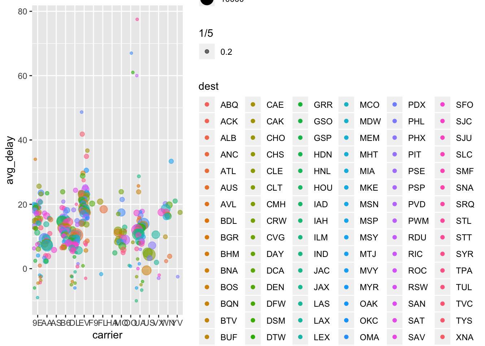
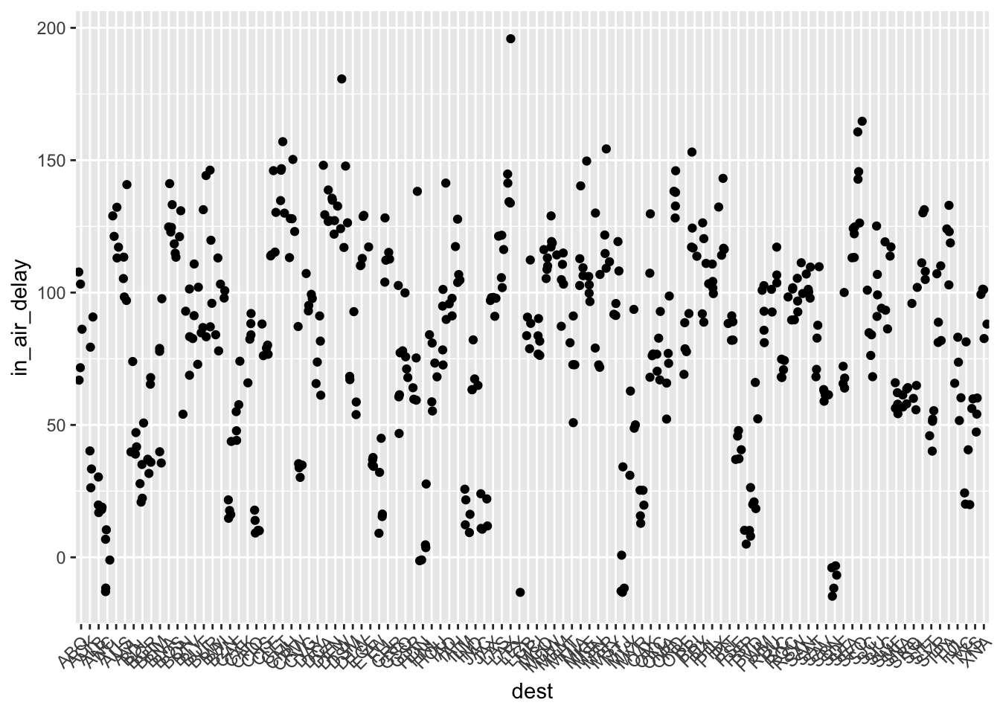

Chapter 5 - Data transformation
The data that we will work with in chapter 5 is from the nycflights13 package.
library(tidyverse)
library(nycflights13)5.2 Notes - Filter rows with filter()
filter() will subset obervations based on their values. I think it works a lot like the which() function in base R (ie: data[which(data$variable > value),] ). Below is a way to do the same thing using either filter() or base R which().
# tidyverse filter() output
filter(flights, month == 1, day == 1)## # A tibble: 842 x 19
## year month day dep_time sched_dep_time dep_delay arr_time
## <int> <int> <int> <int> <int> <dbl> <int>
## 1 2013 1 1 517 515 2 830
## 2 2013 1 1 533 529 4 850
## 3 2013 1 1 542 540 2 923
## 4 2013 1 1 544 545 -1 1004
## 5 2013 1 1 554 600 -6 812
## 6 2013 1 1 554 558 -4 740
## 7 2013 1 1 555 600 -5 913
## 8 2013 1 1 557 600 -3 709
## 9 2013 1 1 557 600 -3 838
## 10 2013 1 1 558 600 -2 753
## # … with 832 more rows, and 12 more variables: sched_arr_time <int>,
## # arr_delay <dbl>, carrier <chr>, flight <int>, tailnum <chr>,
## # origin <chr>, dest <chr>, air_time <dbl>, distance <dbl>, hour <dbl>,
## # minute <dbl>, time_hour <dttm># base R way to get the same output
flights[which(flights$month ==1 & flights$day ==1),]## # A tibble: 842 x 19
## year month day dep_time sched_dep_time dep_delay arr_time
## <int> <int> <int> <int> <int> <dbl> <int>
## 1 2013 1 1 517 515 2 830
## 2 2013 1 1 533 529 4 850
## 3 2013 1 1 542 540 2 923
## 4 2013 1 1 544 545 -1 1004
## 5 2013 1 1 554 600 -6 812
## 6 2013 1 1 554 558 -4 740
## 7 2013 1 1 555 600 -5 913
## 8 2013 1 1 557 600 -3 709
## 9 2013 1 1 557 600 -3 838
## 10 2013 1 1 558 600 -2 753
## # … with 832 more rows, and 12 more variables: sched_arr_time <int>,
## # arr_delay <dbl>, carrier <chr>, flight <int>, tailnum <chr>,
## # origin <chr>, dest <chr>, air_time <dbl>, distance <dbl>, hour <dbl>,
## # minute <dbl>, time_hour <dttm>5.2.1 Comparisons
A safer way for comparing two numeric vectors is the near() function in dplyr. For example, if running this comparison:
sqrt(2) ^ 2 == 2## [1] FALSE1/49 * 49 == 1## [1] FALSEWe see that what we would normally regard as true is specified as FALSE in R, due to floating point precision issues. The near() function will allow more tolerance.
near(sqrt(2) ^ 2, 2)## [1] TRUEnear(1 / 49 * 49, 1)## [1] TRUE5.2.2 Logical Operators
There are many ways to combine “and”, &, “or”, |, and “not”,! to filter out observations in a data table.
#following two filter functions give same output
filter(flights, month == 11 | month == 12)## # A tibble: 55,403 x 19
## year month day dep_time sched_dep_time dep_delay arr_time
## <int> <int> <int> <int> <int> <dbl> <int>
## 1 2013 11 1 5 2359 6 352
## 2 2013 11 1 35 2250 105 123
## 3 2013 11 1 455 500 -5 641
## 4 2013 11 1 539 545 -6 856
## 5 2013 11 1 542 545 -3 831
## 6 2013 11 1 549 600 -11 912
## 7 2013 11 1 550 600 -10 705
## 8 2013 11 1 554 600 -6 659
## 9 2013 11 1 554 600 -6 826
## 10 2013 11 1 554 600 -6 749
## # … with 55,393 more rows, and 12 more variables: sched_arr_time <int>,
## # arr_delay <dbl>, carrier <chr>, flight <int>, tailnum <chr>,
## # origin <chr>, dest <chr>, air_time <dbl>, distance <dbl>, hour <dbl>,
## # minute <dbl>, time_hour <dttm>filter(flights, month %in% c(11,12))## # A tibble: 55,403 x 19
## year month day dep_time sched_dep_time dep_delay arr_time
## <int> <int> <int> <int> <int> <dbl> <int>
## 1 2013 11 1 5 2359 6 352
## 2 2013 11 1 35 2250 105 123
## 3 2013 11 1 455 500 -5 641
## 4 2013 11 1 539 545 -6 856
## 5 2013 11 1 542 545 -3 831
## 6 2013 11 1 549 600 -11 912
## 7 2013 11 1 550 600 -10 705
## 8 2013 11 1 554 600 -6 659
## 9 2013 11 1 554 600 -6 826
## 10 2013 11 1 554 600 -6 749
## # … with 55,393 more rows, and 12 more variables: sched_arr_time <int>,
## # arr_delay <dbl>, carrier <chr>, flight <int>, tailnum <chr>,
## # origin <chr>, dest <chr>, air_time <dbl>, distance <dbl>, hour <dbl>,
## # minute <dbl>, time_hour <dttm>#following two filter functions give same output
filter(flights, !(arr_delay > 120 | dep_delay > 120))## # A tibble: 316,050 x 19
## year month day dep_time sched_dep_time dep_delay arr_time
## <int> <int> <int> <int> <int> <dbl> <int>
## 1 2013 1 1 517 515 2 830
## 2 2013 1 1 533 529 4 850
## 3 2013 1 1 542 540 2 923
## 4 2013 1 1 544 545 -1 1004
## 5 2013 1 1 554 600 -6 812
## 6 2013 1 1 554 558 -4 740
## 7 2013 1 1 555 600 -5 913
## 8 2013 1 1 557 600 -3 709
## 9 2013 1 1 557 600 -3 838
## 10 2013 1 1 558 600 -2 753
## # … with 316,040 more rows, and 12 more variables: sched_arr_time <int>,
## # arr_delay <dbl>, carrier <chr>, flight <int>, tailnum <chr>,
## # origin <chr>, dest <chr>, air_time <dbl>, distance <dbl>, hour <dbl>,
## # minute <dbl>, time_hour <dttm>filter(flights, arr_delay <= 120 & !dep_delay > 120)## # A tibble: 316,050 x 19
## year month day dep_time sched_dep_time dep_delay arr_time
## <int> <int> <int> <int> <int> <dbl> <int>
## 1 2013 1 1 517 515 2 830
## 2 2013 1 1 533 529 4 850
## 3 2013 1 1 542 540 2 923
## 4 2013 1 1 544 545 -1 1004
## 5 2013 1 1 554 600 -6 812
## 6 2013 1 1 554 558 -4 740
## 7 2013 1 1 555 600 -5 913
## 8 2013 1 1 557 600 -3 709
## 9 2013 1 1 557 600 -3 838
## 10 2013 1 1 558 600 -2 753
## # … with 316,040 more rows, and 12 more variables: sched_arr_time <int>,
## # arr_delay <dbl>, carrier <chr>, flight <int>, tailnum <chr>,
## # origin <chr>, dest <chr>, air_time <dbl>, distance <dbl>, hour <dbl>,
## # minute <dbl>, time_hour <dttm>5.2.3 Missing values
Missing values are represented as NA. NA values are “contagious,” meaning that any operation or comparison with NA will also return NA. If a data frame contains NA values, they will not be returned by filter() unless specifically asked for, using is.na()
df <- tibble(x = c(1, NA, 3))
filter(df, x > 1)## # A tibble: 1 x 1
## x
## <dbl>
## 1 3#> # A tibble: 1 × 1
#> x
#> <dbl>
#> 1 3
filter(df, is.na(x) | x > 1)## # A tibble: 2 x 1
## x
## <dbl>
## 1 NA
## 2 35.2.4 Exercises
1. Find all flights that
- Had an arrival delay of two or more hours
# arr_delay is in minutes, so 120 for two hours
filter(flights, arr_delay >= 120)## # A tibble: 10,200 x 19
## year month day dep_time sched_dep_time dep_delay arr_time
## <int> <int> <int> <int> <int> <dbl> <int>
## 1 2013 1 1 811 630 101 1047
## 2 2013 1 1 848 1835 853 1001
## 3 2013 1 1 957 733 144 1056
## 4 2013 1 1 1114 900 134 1447
## 5 2013 1 1 1505 1310 115 1638
## 6 2013 1 1 1525 1340 105 1831
## 7 2013 1 1 1549 1445 64 1912
## 8 2013 1 1 1558 1359 119 1718
## 9 2013 1 1 1732 1630 62 2028
## 10 2013 1 1 1803 1620 103 2008
## # … with 10,190 more rows, and 12 more variables: sched_arr_time <int>,
## # arr_delay <dbl>, carrier <chr>, flight <int>, tailnum <chr>,
## # origin <chr>, dest <chr>, air_time <dbl>, distance <dbl>, hour <dbl>,
## # minute <dbl>, time_hour <dttm>- Flew to Houston (IAH or HOU)
filter(flights, dest == "IAH" | dest == "HOU")## # A tibble: 9,313 x 19
## year month day dep_time sched_dep_time dep_delay arr_time
## <int> <int> <int> <int> <int> <dbl> <int>
## 1 2013 1 1 517 515 2 830
## 2 2013 1 1 533 529 4 850
## 3 2013 1 1 623 627 -4 933
## 4 2013 1 1 728 732 -4 1041
## 5 2013 1 1 739 739 0 1104
## 6 2013 1 1 908 908 0 1228
## 7 2013 1 1 1028 1026 2 1350
## 8 2013 1 1 1044 1045 -1 1352
## 9 2013 1 1 1114 900 134 1447
## 10 2013 1 1 1205 1200 5 1503
## # … with 9,303 more rows, and 12 more variables: sched_arr_time <int>,
## # arr_delay <dbl>, carrier <chr>, flight <int>, tailnum <chr>,
## # origin <chr>, dest <chr>, air_time <dbl>, distance <dbl>, hour <dbl>,
## # minute <dbl>, time_hour <dttm>- Were operated by United, American, or Delta
#find all unique carriers:
unique(flights$carrier)## [1] "UA" "AA" "B6" "DL" "EV" "MQ" "US" "WN" "VX" "FL" "AS" "9E" "F9" "HA"
## [15] "YV" "OO"#Symbol for United = UA, American = AA, Delta = DL
filter (flights, carrier %in% c("UA", "AA","DL"))## # A tibble: 139,504 x 19
## year month day dep_time sched_dep_time dep_delay arr_time
## <int> <int> <int> <int> <int> <dbl> <int>
## 1 2013 1 1 517 515 2 830
## 2 2013 1 1 533 529 4 850
## 3 2013 1 1 542 540 2 923
## 4 2013 1 1 554 600 -6 812
## 5 2013 1 1 554 558 -4 740
## 6 2013 1 1 558 600 -2 753
## 7 2013 1 1 558 600 -2 924
## 8 2013 1 1 558 600 -2 923
## 9 2013 1 1 559 600 -1 941
## 10 2013 1 1 559 600 -1 854
## # … with 139,494 more rows, and 12 more variables: sched_arr_time <int>,
## # arr_delay <dbl>, carrier <chr>, flight <int>, tailnum <chr>,
## # origin <chr>, dest <chr>, air_time <dbl>, distance <dbl>, hour <dbl>,
## # minute <dbl>, time_hour <dttm>- Departed in summer (July, August, and September)
filter (flights, month >= 7 & month <=9)## # A tibble: 86,326 x 19
## year month day dep_time sched_dep_time dep_delay arr_time
## <int> <int> <int> <int> <int> <dbl> <int>
## 1 2013 7 1 1 2029 212 236
## 2 2013 7 1 2 2359 3 344
## 3 2013 7 1 29 2245 104 151
## 4 2013 7 1 43 2130 193 322
## 5 2013 7 1 44 2150 174 300
## 6 2013 7 1 46 2051 235 304
## 7 2013 7 1 48 2001 287 308
## 8 2013 7 1 58 2155 183 335
## 9 2013 7 1 100 2146 194 327
## 10 2013 7 1 100 2245 135 337
## # … with 86,316 more rows, and 12 more variables: sched_arr_time <int>,
## # arr_delay <dbl>, carrier <chr>, flight <int>, tailnum <chr>,
## # origin <chr>, dest <chr>, air_time <dbl>, distance <dbl>, hour <dbl>,
## # minute <dbl>, time_hour <dttm># test whether the output only has months 7 8 9 to check our work.
unique(filter (flights, month >= 7 & month <=9)$month)## [1] 7 8 9- Arrived more than two hours late, but didn’t leave late
filter (flights, arr_delay > 120, dep_delay <=0)## # A tibble: 29 x 19
## year month day dep_time sched_dep_time dep_delay arr_time
## <int> <int> <int> <int> <int> <dbl> <int>
## 1 2013 1 27 1419 1420 -1 1754
## 2 2013 10 7 1350 1350 0 1736
## 3 2013 10 7 1357 1359 -2 1858
## 4 2013 10 16 657 700 -3 1258
## 5 2013 11 1 658 700 -2 1329
## 6 2013 3 18 1844 1847 -3 39
## 7 2013 4 17 1635 1640 -5 2049
## 8 2013 4 18 558 600 -2 1149
## 9 2013 4 18 655 700 -5 1213
## 10 2013 5 22 1827 1830 -3 2217
## # … with 19 more rows, and 12 more variables: sched_arr_time <int>,
## # arr_delay <dbl>, carrier <chr>, flight <int>, tailnum <chr>,
## # origin <chr>, dest <chr>, air_time <dbl>, distance <dbl>, hour <dbl>,
## # minute <dbl>, time_hour <dttm>#looks like combining the two arguments into one does the same thing.
filter(flights, arr_delay > 120 & dep_delay <=0)## # A tibble: 29 x 19
## year month day dep_time sched_dep_time dep_delay arr_time
## <int> <int> <int> <int> <int> <dbl> <int>
## 1 2013 1 27 1419 1420 -1 1754
## 2 2013 10 7 1350 1350 0 1736
## 3 2013 10 7 1357 1359 -2 1858
## 4 2013 10 16 657 700 -3 1258
## 5 2013 11 1 658 700 -2 1329
## 6 2013 3 18 1844 1847 -3 39
## 7 2013 4 17 1635 1640 -5 2049
## 8 2013 4 18 558 600 -2 1149
## 9 2013 4 18 655 700 -5 1213
## 10 2013 5 22 1827 1830 -3 2217
## # … with 19 more rows, and 12 more variables: sched_arr_time <int>,
## # arr_delay <dbl>, carrier <chr>, flight <int>, tailnum <chr>,
## # origin <chr>, dest <chr>, air_time <dbl>, distance <dbl>, hour <dbl>,
## # minute <dbl>, time_hour <dttm>- Were delayed by at least an hour, but made up over 30 minutes in flight
# if delayed 60 minutes but made up at least 30, expect arr_delay to be less than 60-30 = 30 min
filter (flights, dep_delay >= 60, arr_delay < 30)## # A tibble: 206 x 19
## year month day dep_time sched_dep_time dep_delay arr_time
## <int> <int> <int> <int> <int> <dbl> <int>
## 1 2013 1 3 1850 1745 65 2148
## 2 2013 1 3 1950 1845 65 2228
## 3 2013 1 3 2015 1915 60 2135
## 4 2013 1 6 1019 900 79 1558
## 5 2013 1 7 1543 1430 73 1758
## 6 2013 1 11 1020 920 60 1311
## 7 2013 1 12 1706 1600 66 1949
## 8 2013 1 12 1953 1845 68 2154
## 9 2013 1 19 1456 1355 61 1636
## 10 2013 1 21 1531 1430 61 1843
## # … with 196 more rows, and 12 more variables: sched_arr_time <int>,
## # arr_delay <dbl>, carrier <chr>, flight <int>, tailnum <chr>,
## # origin <chr>, dest <chr>, air_time <dbl>, distance <dbl>, hour <dbl>,
## # minute <dbl>, time_hour <dttm>- Departed between midnight and 6am (inclusive)
times <- filter (flights, dep_time >= 0 & dep_time <= 600)
times## # A tibble: 9,344 x 19
## year month day dep_time sched_dep_time dep_delay arr_time
## <int> <int> <int> <int> <int> <dbl> <int>
## 1 2013 1 1 517 515 2 830
## 2 2013 1 1 533 529 4 850
## 3 2013 1 1 542 540 2 923
## 4 2013 1 1 544 545 -1 1004
## 5 2013 1 1 554 600 -6 812
## 6 2013 1 1 554 558 -4 740
## 7 2013 1 1 555 600 -5 913
## 8 2013 1 1 557 600 -3 709
## 9 2013 1 1 557 600 -3 838
## 10 2013 1 1 558 600 -2 753
## # … with 9,334 more rows, and 12 more variables: sched_arr_time <int>,
## # arr_delay <dbl>, carrier <chr>, flight <int>, tailnum <chr>,
## # origin <chr>, dest <chr>, air_time <dbl>, distance <dbl>, hour <dbl>,
## # minute <dbl>, time_hour <dttm>#check if it worked
range(times$dep_time)## [1] 1 600- Another useful dplyr filtering helper is between(). What does it do? Can you use it to simplify the code needed to answer the previous challenges?
?between() states that this is a shortcut to perform the same function as x >= left & x <= right, for between(x, left, right). I will use between() to produce the same result as in the previous bullet point for flights departing between midnight and 6am.
filter(flights, between(dep_time, 0, 600))## # A tibble: 9,344 x 19
## year month day dep_time sched_dep_time dep_delay arr_time
## <int> <int> <int> <int> <int> <dbl> <int>
## 1 2013 1 1 517 515 2 830
## 2 2013 1 1 533 529 4 850
## 3 2013 1 1 542 540 2 923
## 4 2013 1 1 544 545 -1 1004
## 5 2013 1 1 554 600 -6 812
## 6 2013 1 1 554 558 -4 740
## 7 2013 1 1 555 600 -5 913
## 8 2013 1 1 557 600 -3 709
## 9 2013 1 1 557 600 -3 838
## 10 2013 1 1 558 600 -2 753
## # … with 9,334 more rows, and 12 more variables: sched_arr_time <int>,
## # arr_delay <dbl>, carrier <chr>, flight <int>, tailnum <chr>,
## # origin <chr>, dest <chr>, air_time <dbl>, distance <dbl>, hour <dbl>,
## # minute <dbl>, time_hour <dttm>2. How many flights have a missing dep_time? What other variables are missing? What might these rows represent?
filter(flights, is.na(dep_time))## # A tibble: 8,255 x 19
## year month day dep_time sched_dep_time dep_delay arr_time
## <int> <int> <int> <int> <int> <dbl> <int>
## 1 2013 1 1 NA 1630 NA NA
## 2 2013 1 1 NA 1935 NA NA
## 3 2013 1 1 NA 1500 NA NA
## 4 2013 1 1 NA 600 NA NA
## 5 2013 1 2 NA 1540 NA NA
## 6 2013 1 2 NA 1620 NA NA
## 7 2013 1 2 NA 1355 NA NA
## 8 2013 1 2 NA 1420 NA NA
## 9 2013 1 2 NA 1321 NA NA
## 10 2013 1 2 NA 1545 NA NA
## # … with 8,245 more rows, and 12 more variables: sched_arr_time <int>,
## # arr_delay <dbl>, carrier <chr>, flight <int>, tailnum <chr>,
## # origin <chr>, dest <chr>, air_time <dbl>, distance <dbl>, hour <dbl>,
## # minute <dbl>, time_hour <dttm>The flights with missing dep_time also have missing arr_time and air_time, suggesting that these were cancelled flights.
3. Why is NA ^ 0 not missing? Why is NA | TRUE not missing? Why is FALSE & NA not missing? Can you figure out the general rule? (NA * 0 is a tricky counterexample!)
Since NA represents an unknown value, it still obeys certain rules as if it were a known value. Since any number to the power of 0 is 1, NA^0 returns the value 1, which will make the code filter(flights, dep_time == NA^0) return all the flights that departed at time 0001. NA | TRUE is an expression that evaluates to TRUE, because the logical operator will evaluate whether either side has a TRUE value. This would return all the data points in the data frame. FALSE & NA returns FALSE based on the same premise as the previous item. Since FALSE exists on either side of the & logical operator, it is evaluated as FALSE. The general (but not concrete) rule is that modifying NA with a logical operator in the form NA <operator> value will evaluate to either TRUE or FALSE, returning not missing values, and that NA will still abide by certain rules that any value would abide by. NA*0, however, is an exception beacuse this still evaluates to NA, whereas other values would evaluate to 0.
NA^0## [1] 1NA | TRUE## [1] TRUEFALSE & NA## [1] FALSENA*0## [1] NAfilter(flights, dep_time == NA^0)## # A tibble: 25 x 19
## year month day dep_time sched_dep_time dep_delay arr_time
## <int> <int> <int> <int> <int> <dbl> <int>
## 1 2013 1 13 1 2249 72 108
## 2 2013 1 31 1 2100 181 124
## 3 2013 11 13 1 2359 2 442
## 4 2013 12 16 1 2359 2 447
## 5 2013 12 20 1 2359 2 430
## 6 2013 12 26 1 2359 2 437
## 7 2013 12 30 1 2359 2 441
## 8 2013 2 11 1 2100 181 111
## 9 2013 2 24 1 2245 76 121
## 10 2013 3 8 1 2355 6 431
## # … with 15 more rows, and 12 more variables: sched_arr_time <int>,
## # arr_delay <dbl>, carrier <chr>, flight <int>, tailnum <chr>,
## # origin <chr>, dest <chr>, air_time <dbl>, distance <dbl>, hour <dbl>,
## # minute <dbl>, time_hour <dttm>filter(flights, dep_time == NA | TRUE)## # A tibble: 336,776 x 19
## year month day dep_time sched_dep_time dep_delay arr_time
## <int> <int> <int> <int> <int> <dbl> <int>
## 1 2013 1 1 517 515 2 830
## 2 2013 1 1 533 529 4 850
## 3 2013 1 1 542 540 2 923
## 4 2013 1 1 544 545 -1 1004
## 5 2013 1 1 554 600 -6 812
## 6 2013 1 1 554 558 -4 740
## 7 2013 1 1 555 600 -5 913
## 8 2013 1 1 557 600 -3 709
## 9 2013 1 1 557 600 -3 838
## 10 2013 1 1 558 600 -2 753
## # … with 336,766 more rows, and 12 more variables: sched_arr_time <int>,
## # arr_delay <dbl>, carrier <chr>, flight <int>, tailnum <chr>,
## # origin <chr>, dest <chr>, air_time <dbl>, distance <dbl>, hour <dbl>,
## # minute <dbl>, time_hour <dttm>5.3 Notes - Arrange rows with arrange()
arrange() will return a data frame with the observations sorted by the variable you specify. It functions similarly to the order() function in base R. Below are two ways to get the same sorted dataframe using arrange() and order(). You can see that arrange() makes things a little simpler to read. For the base R order() function, it will only return a sorted list of values, so you have to pass them into the flights[] frame to obtain all the values for the sorted data.
# using arrange()
arrange(flights, desc(arr_delay))## # A tibble: 336,776 x 19
## year month day dep_time sched_dep_time dep_delay arr_time
## <int> <int> <int> <int> <int> <dbl> <int>
## 1 2013 1 9 641 900 1301 1242
## 2 2013 6 15 1432 1935 1137 1607
## 3 2013 1 10 1121 1635 1126 1239
## 4 2013 9 20 1139 1845 1014 1457
## 5 2013 7 22 845 1600 1005 1044
## 6 2013 4 10 1100 1900 960 1342
## 7 2013 3 17 2321 810 911 135
## 8 2013 7 22 2257 759 898 121
## 9 2013 12 5 756 1700 896 1058
## 10 2013 5 3 1133 2055 878 1250
## # … with 336,766 more rows, and 12 more variables: sched_arr_time <int>,
## # arr_delay <dbl>, carrier <chr>, flight <int>, tailnum <chr>,
## # origin <chr>, dest <chr>, air_time <dbl>, distance <dbl>, hour <dbl>,
## # minute <dbl>, time_hour <dttm># using base R order()
flights[order(flights$arr_delay, decreasing = T),]## # A tibble: 336,776 x 19
## year month day dep_time sched_dep_time dep_delay arr_time
## <int> <int> <int> <int> <int> <dbl> <int>
## 1 2013 1 9 641 900 1301 1242
## 2 2013 6 15 1432 1935 1137 1607
## 3 2013 1 10 1121 1635 1126 1239
## 4 2013 9 20 1139 1845 1014 1457
## 5 2013 7 22 845 1600 1005 1044
## 6 2013 4 10 1100 1900 960 1342
## 7 2013 3 17 2321 810 911 135
## 8 2013 7 22 2257 759 898 121
## 9 2013 12 5 756 1700 896 1058
## 10 2013 5 3 1133 2055 878 1250
## # … with 336,766 more rows, and 12 more variables: sched_arr_time <int>,
## # arr_delay <dbl>, carrier <chr>, flight <int>, tailnum <chr>,
## # origin <chr>, dest <chr>, air_time <dbl>, distance <dbl>, hour <dbl>,
## # minute <dbl>, time_hour <dttm>Missing values (NA) are placed at the end for arrange()
df <- tibble(x = c(5, 2, NA))
arrange(df, x)## # A tibble: 3 x 1
## x
## <dbl>
## 1 2
## 2 5
## 3 NAarrange(df, desc(x))## # A tibble: 3 x 1
## x
## <dbl>
## 1 5
## 2 2
## 3 NA5.3.1 Exercises
1. How could you use arrange() to sort all missing values to the start? (Hint: use is.na()).
arrange(flights, desc(is.na(dep_time)))## # A tibble: 336,776 x 19
## year month day dep_time sched_dep_time dep_delay arr_time
## <int> <int> <int> <int> <int> <dbl> <int>
## 1 2013 1 1 NA 1630 NA NA
## 2 2013 1 1 NA 1935 NA NA
## 3 2013 1 1 NA 1500 NA NA
## 4 2013 1 1 NA 600 NA NA
## 5 2013 1 2 NA 1540 NA NA
## 6 2013 1 2 NA 1620 NA NA
## 7 2013 1 2 NA 1355 NA NA
## 8 2013 1 2 NA 1420 NA NA
## 9 2013 1 2 NA 1321 NA NA
## 10 2013 1 2 NA 1545 NA NA
## # … with 336,766 more rows, and 12 more variables: sched_arr_time <int>,
## # arr_delay <dbl>, carrier <chr>, flight <int>, tailnum <chr>,
## # origin <chr>, dest <chr>, air_time <dbl>, distance <dbl>, hour <dbl>,
## # minute <dbl>, time_hour <dttm>2. Sort flights to find the most delayed flights. Find the flights that left earliest.
# most delayed flights
arrange(flights, desc(dep_delay))## # A tibble: 336,776 x 19
## year month day dep_time sched_dep_time dep_delay arr_time
## <int> <int> <int> <int> <int> <dbl> <int>
## 1 2013 1 9 641 900 1301 1242
## 2 2013 6 15 1432 1935 1137 1607
## 3 2013 1 10 1121 1635 1126 1239
## 4 2013 9 20 1139 1845 1014 1457
## 5 2013 7 22 845 1600 1005 1044
## 6 2013 4 10 1100 1900 960 1342
## 7 2013 3 17 2321 810 911 135
## 8 2013 6 27 959 1900 899 1236
## 9 2013 7 22 2257 759 898 121
## 10 2013 12 5 756 1700 896 1058
## # … with 336,766 more rows, and 12 more variables: sched_arr_time <int>,
## # arr_delay <dbl>, carrier <chr>, flight <int>, tailnum <chr>,
## # origin <chr>, dest <chr>, air_time <dbl>, distance <dbl>, hour <dbl>,
## # minute <dbl>, time_hour <dttm># flights that left earliest (least amount of delay)
arrange(flights, dep_delay)## # A tibble: 336,776 x 19
## year month day dep_time sched_dep_time dep_delay arr_time
## <int> <int> <int> <int> <int> <dbl> <int>
## 1 2013 12 7 2040 2123 -43 40
## 2 2013 2 3 2022 2055 -33 2240
## 3 2013 11 10 1408 1440 -32 1549
## 4 2013 1 11 1900 1930 -30 2233
## 5 2013 1 29 1703 1730 -27 1947
## 6 2013 8 9 729 755 -26 1002
## 7 2013 10 23 1907 1932 -25 2143
## 8 2013 3 30 2030 2055 -25 2213
## 9 2013 3 2 1431 1455 -24 1601
## 10 2013 5 5 934 958 -24 1225
## # … with 336,766 more rows, and 12 more variables: sched_arr_time <int>,
## # arr_delay <dbl>, carrier <chr>, flight <int>, tailnum <chr>,
## # origin <chr>, dest <chr>, air_time <dbl>, distance <dbl>, hour <dbl>,
## # minute <dbl>, time_hour <dttm>3. Sort flights to find the fastest flights.
# fastest flights
arrange (flights, arr_delay)## # A tibble: 336,776 x 19
## year month day dep_time sched_dep_time dep_delay arr_time
## <int> <int> <int> <int> <int> <dbl> <int>
## 1 2013 5 7 1715 1729 -14 1944
## 2 2013 5 20 719 735 -16 951
## 3 2013 5 2 1947 1949 -2 2209
## 4 2013 5 6 1826 1830 -4 2045
## 5 2013 5 4 1816 1820 -4 2017
## 6 2013 5 2 1926 1929 -3 2157
## 7 2013 5 6 1753 1755 -2 2004
## 8 2013 5 7 2054 2055 -1 2317
## 9 2013 5 13 657 700 -3 908
## 10 2013 1 4 1026 1030 -4 1305
## # … with 336,766 more rows, and 12 more variables: sched_arr_time <int>,
## # arr_delay <dbl>, carrier <chr>, flight <int>, tailnum <chr>,
## # origin <chr>, dest <chr>, air_time <dbl>, distance <dbl>, hour <dbl>,
## # minute <dbl>, time_hour <dttm># find out which airlines had the top 1,000 fastest flights
top1000_fastest <- arrange(flights,arr_delay)[1:1000,]
ggplot (top1000_fastest, aes ( x = carrier, fill = carrier))+
geom_bar()
# compare total air time vs dep_delay to see if there are any trends between airlines
ggplot (top1000_fastest, aes (x = arr_delay, y = air_time))+
geom_point( aes (color = carrier))Based on the bar plot, within the top 1000 flights that landed early, AA, DL, and UA have more than other airlines. Looking at the scatterplot, it seems UA generally has medium-length flights that arrive ahead of schedule, whereas HA has very long flights that arrive ahead of schedule, and 9E has very short flights that arrive ahead of schedule.
4. Which flights travelled the longest? Which travelled the shortest?
The shortest flights were from EWR to BDL, taking around 22 minutes. Of the top 100 shortest flights, flight number 4276 was the most frequent. The longest flights were from JFK to HNL or EWR to HNL, and lasted around 654 minutes. Of the top 100 longest flights, flight number 51 was the most frequent.
# flights that travelled the shortest
shortest <- arrange(flights, air_time)[1:100,]
shortest## # A tibble: 100 x 19
## year month day dep_time sched_dep_time dep_delay arr_time
## <int> <int> <int> <int> <int> <dbl> <int>
## 1 2013 1 16 1355 1315 40 1442
## 2 2013 4 13 537 527 10 622
## 3 2013 12 6 922 851 31 1021
## 4 2013 2 3 2153 2129 24 2247
## 5 2013 2 5 1303 1315 -12 1342
## 6 2013 2 12 2123 2130 -7 2211
## 7 2013 3 2 1450 1500 -10 1547
## 8 2013 3 8 2026 1935 51 2131
## 9 2013 3 18 1456 1329 87 1533
## 10 2013 3 19 2226 2145 41 2305
## # … with 90 more rows, and 12 more variables: sched_arr_time <int>,
## # arr_delay <dbl>, carrier <chr>, flight <int>, tailnum <chr>,
## # origin <chr>, dest <chr>, air_time <dbl>, distance <dbl>, hour <dbl>,
## # minute <dbl>, time_hour <dttm># find the most frequent flight number for top 100 shortest flights.
arrange(count(shortest, flight),desc(n))## # A tibble: 32 x 2
## flight n
## <int> <int>
## 1 4276 19
## 2 4368 12
## 3 3822 8
## 4 4155 7
## 5 3847 5
## 6 4619 5
## 7 4103 4
## 8 3825 3
## 9 4118 3
## 10 5968 3
## # … with 22 more rows# flights that travelled the longest
longest <- arrange(flights, desc(air_time))[1:100,]
longest## # A tibble: 100 x 19
## year month day dep_time sched_dep_time dep_delay arr_time
## <int> <int> <int> <int> <int> <dbl> <int>
## 1 2013 3 17 1337 1335 2 1937
## 2 2013 2 6 853 900 -7 1542
## 3 2013 3 15 1001 1000 1 1551
## 4 2013 3 17 1006 1000 6 1607
## 5 2013 3 16 1001 1000 1 1544
## 6 2013 2 5 900 900 0 1555
## 7 2013 11 12 936 930 6 1630
## 8 2013 3 14 958 1000 -2 1542
## 9 2013 11 20 1006 1000 6 1639
## 10 2013 3 15 1342 1335 7 1924
## # … with 90 more rows, and 12 more variables: sched_arr_time <int>,
## # arr_delay <dbl>, carrier <chr>, flight <int>, tailnum <chr>,
## # origin <chr>, dest <chr>, air_time <dbl>, distance <dbl>, hour <dbl>,
## # minute <dbl>, time_hour <dttm># find the most frequent flight number for top 100 shortest flights.
arrange(count(longest, flight),desc(n))## # A tibble: 2 x 2
## flight n
## <int> <int>
## 1 51 61
## 2 15 39# get average flight time for top 100 shortest / longest flights
mean(shortest$air_time)## [1] 22.32mean(longest$air_time)## [1] 654.475.4 Notes - Select columns with select()
The select() function allows you to select a subset of columns (variables) from your data frame and return a new data frame with these selected columns. This works similarly to using indexes to pull out columns from a data frame in base R. For example, here is a way to do the same thing both ways:
# Select columns by name
select(flights, year, month, day)## # A tibble: 336,776 x 3
## year month day
## <int> <int> <int>
## 1 2013 1 1
## 2 2013 1 1
## 3 2013 1 1
## 4 2013 1 1
## 5 2013 1 1
## 6 2013 1 1
## 7 2013 1 1
## 8 2013 1 1
## 9 2013 1 1
## 10 2013 1 1
## # … with 336,766 more rows# use base R to do the same thing
flights[,c("year","month","day")]## # A tibble: 336,776 x 3
## year month day
## <int> <int> <int>
## 1 2013 1 1
## 2 2013 1 1
## 3 2013 1 1
## 4 2013 1 1
## 5 2013 1 1
## 6 2013 1 1
## 7 2013 1 1
## 8 2013 1 1
## 9 2013 1 1
## 10 2013 1 1
## # … with 336,766 more rowsSelect seems to be more versatile if you want to do other things quickly, like combining it with ends_with(), starts_with(), contains(), matches(), num_range(), etc.
# select multiple columns using colon
select(flights, year:day)## # A tibble: 336,776 x 3
## year month day
## <int> <int> <int>
## 1 2013 1 1
## 2 2013 1 1
## 3 2013 1 1
## 4 2013 1 1
## 5 2013 1 1
## 6 2013 1 1
## 7 2013 1 1
## 8 2013 1 1
## 9 2013 1 1
## 10 2013 1 1
## # … with 336,766 more rows# select columns that end with a phrase
select(flights, ends_with("time"))## # A tibble: 336,776 x 5
## dep_time sched_dep_time arr_time sched_arr_time air_time
## <int> <int> <int> <int> <dbl>
## 1 517 515 830 819 227
## 2 533 529 850 830 227
## 3 542 540 923 850 160
## 4 544 545 1004 1022 183
## 5 554 600 812 837 116
## 6 554 558 740 728 150
## 7 555 600 913 854 158
## 8 557 600 709 723 53
## 9 557 600 838 846 140
## 10 558 600 753 745 138
## # … with 336,766 more rowsA variant of select(), rename(), can rename column variables. This seems very useful.
rename(flights, tail_num = tailnum)## # A tibble: 336,776 x 19
## year month day dep_time sched_dep_time dep_delay arr_time
## <int> <int> <int> <int> <int> <dbl> <int>
## 1 2013 1 1 517 515 2 830
## 2 2013 1 1 533 529 4 850
## 3 2013 1 1 542 540 2 923
## 4 2013 1 1 544 545 -1 1004
## 5 2013 1 1 554 600 -6 812
## 6 2013 1 1 554 558 -4 740
## 7 2013 1 1 555 600 -5 913
## 8 2013 1 1 557 600 -3 709
## 9 2013 1 1 557 600 -3 838
## 10 2013 1 1 558 600 -2 753
## # … with 336,766 more rows, and 12 more variables: sched_arr_time <int>,
## # arr_delay <dbl>, carrier <chr>, flight <int>, tail_num <chr>,
## # origin <chr>, dest <chr>, air_time <dbl>, distance <dbl>, hour <dbl>,
## # minute <dbl>, time_hour <dttm>To move variables to the leftmost side using select(), use the everything() function in conjunction with the variables you are pulling out.
select(flights, carrier, flight, everything())## # A tibble: 336,776 x 19
## carrier flight year month day dep_time sched_dep_time dep_delay
## <chr> <int> <int> <int> <int> <int> <int> <dbl>
## 1 UA 1545 2013 1 1 517 515 2
## 2 UA 1714 2013 1 1 533 529 4
## 3 AA 1141 2013 1 1 542 540 2
## 4 B6 725 2013 1 1 544 545 -1
## 5 DL 461 2013 1 1 554 600 -6
## 6 UA 1696 2013 1 1 554 558 -4
## 7 B6 507 2013 1 1 555 600 -5
## 8 EV 5708 2013 1 1 557 600 -3
## 9 B6 79 2013 1 1 557 600 -3
## 10 AA 301 2013 1 1 558 600 -2
## # … with 336,766 more rows, and 11 more variables: arr_time <int>,
## # sched_arr_time <int>, arr_delay <dbl>, tailnum <chr>, origin <chr>,
## # dest <chr>, air_time <dbl>, distance <dbl>, hour <dbl>, minute <dbl>,
## # time_hour <dttm>5.4.1 Exercises
1. Brainstorm as many ways as possible to select dep_time, dep_delay, arr_time, and arr_delay from flights.
# standard way to select
select (flights, dep_time, dep_delay, arr_time, arr_delay)## # A tibble: 336,776 x 4
## dep_time dep_delay arr_time arr_delay
## <int> <dbl> <int> <dbl>
## 1 517 2 830 11
## 2 533 4 850 20
## 3 542 2 923 33
## 4 544 -1 1004 -18
## 5 554 -6 812 -25
## 6 554 -4 740 12
## 7 555 -5 913 19
## 8 557 -3 709 -14
## 9 557 -3 838 -8
## 10 558 -2 753 8
## # … with 336,766 more rows# select using starts_with()
select (flights, starts_with("dep"),starts_with("arr"))## # A tibble: 336,776 x 4
## dep_time dep_delay arr_time arr_delay
## <int> <dbl> <int> <dbl>
## 1 517 2 830 11
## 2 533 4 850 20
## 3 542 2 923 33
## 4 544 -1 1004 -18
## 5 554 -6 812 -25
## 6 554 -4 740 12
## 7 555 -5 913 19
## 8 557 -3 709 -14
## 9 557 -3 838 -8
## 10 558 -2 753 8
## # … with 336,766 more rows#can also do some less efficient combination of contains() and subtracting columns.
select (flights, contains("dep_"), contains("arr_"),-contains("sched"))## # A tibble: 336,776 x 4
## dep_time dep_delay arr_time arr_delay
## <int> <dbl> <int> <dbl>
## 1 517 2 830 11
## 2 533 4 850 20
## 3 542 2 923 33
## 4 544 -1 1004 -18
## 5 554 -6 812 -25
## 6 554 -4 740 12
## 7 555 -5 913 19
## 8 557 -3 709 -14
## 9 557 -3 838 -8
## 10 558 -2 753 8
## # … with 336,766 more rows2. What happens if you include the name of a variable multiple times in a select() call?
select(flights, dep_time, dep_time)## # A tibble: 336,776 x 1
## dep_time
## <int>
## 1 517
## 2 533
## 3 542
## 4 544
## 5 554
## 6 554
## 7 555
## 8 557
## 9 557
## 10 558
## # … with 336,766 more rowsIt looks like you will only get the variable one time (it will not duplicate).
3. What does the one_of() function do? Why might it be helpful in conjunction with this vector?
one_of() function takes in a vector of characters, which could be names of columns that you want to select. This way, you dont have to have so many arguments in select(). You can pre-make a vector with the columns you want, then select one_of(vars), as shown here. However, I tried just putting the vector in as a argument without one_of() and it gave the same output.
vars <- c("year", "month", "day", "dep_delay", "arr_delay")
#use the one_of() function to select each of the specified columns in vars
select(flights, one_of(vars))## # A tibble: 336,776 x 5
## year month day dep_delay arr_delay
## <int> <int> <int> <dbl> <dbl>
## 1 2013 1 1 2 11
## 2 2013 1 1 4 20
## 3 2013 1 1 2 33
## 4 2013 1 1 -1 -18
## 5 2013 1 1 -6 -25
## 6 2013 1 1 -4 12
## 7 2013 1 1 -5 19
## 8 2013 1 1 -3 -14
## 9 2013 1 1 -3 -8
## 10 2013 1 1 -2 8
## # … with 336,766 more rows# it seems like this also works to give the same output.
select(flights, vars)## # A tibble: 336,776 x 5
## year month day dep_delay arr_delay
## <int> <int> <int> <dbl> <dbl>
## 1 2013 1 1 2 11
## 2 2013 1 1 4 20
## 3 2013 1 1 2 33
## 4 2013 1 1 -1 -18
## 5 2013 1 1 -6 -25
## 6 2013 1 1 -4 12
## 7 2013 1 1 -5 19
## 8 2013 1 1 -3 -14
## 9 2013 1 1 -3 -8
## 10 2013 1 1 -2 8
## # … with 336,766 more rows4. Does the result of running the following code surprise you? How do the select helpers deal with case by default? How can you change that default?
select(flights, contains("TIME"))## # A tibble: 336,776 x 6
## dep_time sched_dep_time arr_time sched_arr_time air_time
## <int> <int> <int> <int> <dbl>
## 1 517 515 830 819 227
## 2 533 529 850 830 227
## 3 542 540 923 850 160
## 4 544 545 1004 1022 183
## 5 554 600 812 837 116
## 6 554 558 740 728 150
## 7 555 600 913 854 158
## 8 557 600 709 723 53
## 9 557 600 838 846 140
## 10 558 600 753 745 138
## # … with 336,766 more rows, and 1 more variable: time_hour <dttm>The code returns columns that have lowercase time in them, even though we specified TIME in uppercase. This is not surprising because ?contains() specifies that “ignore.case = TRUE” by default. To get only columns with uppercase TIME, we can write:
select(flights, contains("TIME", ignore.case = FALSE))## # A tibble: 336,776 x 0Since no columns in the flights data frame have the uppercase TIME in them, nothing is returned.
5.5 Notes - Add new variables with mutate()
# view the data as a spreadsheet with View() - note capital V
# View(flights)
# select a subset of columns so data is easier to work with for demonstration purposes
flights_sml <- select(flights,
year:day,
ends_with("delay"),
distance,
air_time
)
flights_sml## # A tibble: 336,776 x 7
## year month day dep_delay arr_delay distance air_time
## <int> <int> <int> <dbl> <dbl> <dbl> <dbl>
## 1 2013 1 1 2 11 1400 227
## 2 2013 1 1 4 20 1416 227
## 3 2013 1 1 2 33 1089 160
## 4 2013 1 1 -1 -18 1576 183
## 5 2013 1 1 -6 -25 762 116
## 6 2013 1 1 -4 12 719 150
## 7 2013 1 1 -5 19 1065 158
## 8 2013 1 1 -3 -14 229 53
## 9 2013 1 1 -3 -8 944 140
## 10 2013 1 1 -2 8 733 138
## # … with 336,766 more rowsTo add new columns to the dataset that are functions of existing columns, use the mutate() function. You can even refer to newly created columns in the same call, which seems like magic. The new columns are appended to the end of the data frame.
mutate(flights_sml,
gain = arr_delay - dep_delay,
hours = air_time / 60,
gain_per_hour = gain / hours
)## # A tibble: 336,776 x 10
## year month day dep_delay arr_delay distance air_time gain hours
## <int> <int> <int> <dbl> <dbl> <dbl> <dbl> <dbl> <dbl>
## 1 2013 1 1 2 11 1400 227 9 3.78
## 2 2013 1 1 4 20 1416 227 16 3.78
## 3 2013 1 1 2 33 1089 160 31 2.67
## 4 2013 1 1 -1 -18 1576 183 -17 3.05
## 5 2013 1 1 -6 -25 762 116 -19 1.93
## 6 2013 1 1 -4 12 719 150 16 2.5
## 7 2013 1 1 -5 19 1065 158 24 2.63
## 8 2013 1 1 -3 -14 229 53 -11 0.883
## 9 2013 1 1 -3 -8 944 140 -5 2.33
## 10 2013 1 1 -2 8 733 138 10 2.3
## # … with 336,766 more rows, and 1 more variable: gain_per_hour <dbl>To keep only the newly created columns, use transmute():
transmute(flights,
gain = arr_delay - dep_delay,
hours = air_time / 60,
gain_per_hour = gain / hours
)## # A tibble: 336,776 x 3
## gain hours gain_per_hour
## <dbl> <dbl> <dbl>
## 1 9 3.78 2.38
## 2 16 3.78 4.23
## 3 31 2.67 11.6
## 4 -17 3.05 -5.57
## 5 -19 1.93 -9.83
## 6 16 2.5 6.4
## 7 24 2.63 9.11
## 8 -11 0.883 -12.5
## 9 -5 2.33 -2.14
## 10 10 2.3 4.35
## # … with 336,766 more rowsIn general, all functions or operators that can be applied to vectors and return vectors with the same number of values as output can be used with mutate() or transmute(). Examples include arithmetic operators, modular arithmetic, logs, offsets (lead() and lag()), cumulative sum/averages, logical comparisons (returns boolean for each value in vector), Another provided example:
# convert dep_time to hours and minutes using modulus and remainder
transmute(flights,
dep_time,
hour = dep_time %/% 100,
minute = dep_time %% 100
)## # A tibble: 336,776 x 3
## dep_time hour minute
## <int> <dbl> <dbl>
## 1 517 5 17
## 2 533 5 33
## 3 542 5 42
## 4 544 5 44
## 5 554 5 54
## 6 554 5 54
## 7 555 5 55
## 8 557 5 57
## 9 557 5 57
## 10 558 5 58
## # … with 336,766 more rowsy <- c(1, 2, NA, 2, 4, 3)
min_rank(y)## [1] 1 2 NA 2 5 4rank(y)## [1] 1.0 2.5 6.0 2.5 5.0 4.05.5.2 Exercises
1. Currently dep_time and sched_dep_time are convenient to look at, but hard to compute with because they’re not really continuous numbers. Convert them to a more convenient representation of number of minutes since midnight.
To convert military hours to minutes since midnight, first find how many hours it’s been (%/% 100), then multiply that by 60 to get the minutes, then add the remainin minutes (%% 100). Below is a table of the old columns and new columns.
transmute(flights,
dep_time,
sched_dep_time,
dep_time_min = (dep_time %/% 100)*60 + (dep_time %% 100),
sched_dep_time_min = (dep_time %/% 100)*60 + (dep_time %% 100)
)## # A tibble: 336,776 x 4
## dep_time sched_dep_time dep_time_min sched_dep_time_min
## <int> <int> <dbl> <dbl>
## 1 517 515 317 317
## 2 533 529 333 333
## 3 542 540 342 342
## 4 544 545 344 344
## 5 554 600 354 354
## 6 554 558 354 354
## 7 555 600 355 355
## 8 557 600 357 357
## 9 557 600 357 357
## 10 558 600 358 358
## # … with 336,766 more rows2. Compare air_time with arr_time - dep_time. What do you expect to see? What do you see? What do you need to do to fix it?
I expect to see that arr_time - dep_time = air_time. However, the values do not match because arr_time - dep_time returns the amount of time in hours:minutes, whereas air_time is in total minutes. We would have to convert the output into total minutes. However, this still does not fix the problem. There is also the issue of time zones. Depending on where the plane flew, the air_time could be consistent but the arr_time could be way off. We can see from the first two rows that two different flights that had different arr_time and dep_times had the same air_time!
# gives time in hours:min
transmute (flights, arr_time, dep_time, air_time, my_air_time = arr_time - dep_time)## # A tibble: 336,776 x 4
## arr_time dep_time air_time my_air_time
## <int> <int> <dbl> <int>
## 1 830 517 227 313
## 2 850 533 227 317
## 3 923 542 160 381
## 4 1004 544 183 460
## 5 812 554 116 258
## 6 740 554 150 186
## 7 913 555 158 358
## 8 709 557 53 152
## 9 838 557 140 281
## 10 753 558 138 195
## # … with 336,766 more rows# convert to total minutes
transmute (flights, arr_time, dep_time, air_time, my_air_time = ((arr_time %/% 100)*60 + arr_time %% 100) - ((dep_time %/% 100)*60 + dep_time %% 100))## # A tibble: 336,776 x 4
## arr_time dep_time air_time my_air_time
## <int> <int> <dbl> <dbl>
## 1 830 517 227 193
## 2 850 533 227 197
## 3 923 542 160 221
## 4 1004 544 183 260
## 5 812 554 116 138
## 6 740 554 150 106
## 7 913 555 158 198
## 8 709 557 53 72
## 9 838 557 140 161
## 10 753 558 138 115
## # … with 336,766 more rows4. Find the 10 most delayed flights using a ranking function. How do you want to handle ties? Carefully read the documentation for min_rank().
I suppose we could arrange dep_delay to find the top most delayed flights. Using min_rank() will rank the delayed flights - if we rank the delayed flights and then sort on the rank, we see that the most delayed flight is rank 328521, with a delay of 1301 minutes. The default ties.method for min_rank is “min”.
transmute(flights, dep_delay, rank_delay = min_rank(dep_delay)) ## # A tibble: 336,776 x 2
## dep_delay rank_delay
## <dbl> <int>
## 1 2 208140
## 2 4 219823
## 3 2 208140
## 4 -1 164763
## 5 -6 48888
## 6 -4 94410
## 7 -5 69589
## 8 -3 119029
## 9 -3 119029
## 10 -2 143247
## # … with 336,766 more rowssorted_flights <- transmute(flights, dep_delay, rank_delay = min_rank(dep_delay)) %>% arrange(desc(rank_delay))
sorted_flights[1:10,]## # A tibble: 10 x 2
## dep_delay rank_delay
## <dbl> <int>
## 1 1301 328521
## 2 1137 328520
## 3 1126 328519
## 4 1014 328518
## 5 1005 328517
## 6 960 328516
## 7 911 328515
## 8 899 328514
## 9 898 328513
## 10 896 3285125. What does 1:3 + 1:10 return? Why?
# returns error
1:3 + 1:10## Warning in 1:3 + 1:10: longer object length is not a multiple of shorter
## object length## [1] 2 4 6 5 7 9 8 10 12 11# if adding to a multiple:
1:3 + 1:9## [1] 2 4 6 5 7 9 8 10 126. What trigonometric functions does R provide?
Taken from the R documentation: “These functions give the obvious trigonometric functions. They respectively compute the cosine, sine, tangent, arc-cosine, arc-sine, arc-tangent, and the two-argument arc-tangent.”
cospi(x), sinpi(x), and tanpi(x), compute cos(pi*x), sin(pi*x), and tan(pi*x).
5.6 Notes - Grouped summaries with summarise()
summarise(), in its simplest usage, can perform a function on a column in the data set and return the output as a single row:
summarise(flights, delay = mean(dep_delay, na.rm = TRUE))## # A tibble: 1 x 1
## delay
## <dbl>
## 1 12.6A more advanced usage of summarise() is when paired with group_by(). This will return the function on each of the subgroups from group_by(), and giving statistics “by group”. Looking at the group_by() output, there doesnt seem to be any striking difference between the original flights data frame and the grouped data frame. The result of using group_by() is not immediately apparent unless paired with summarise(). It would be interesting to know what other usages group_by() can have.
by_day <- group_by(flights, year, month, day)
summarise(by_day, delay = mean(dep_delay, na.rm = TRUE))## # A tibble: 365 x 4
## # Groups: year, month [?]
## year month day delay
## <int> <int> <int> <dbl>
## 1 2013 1 1 11.5
## 2 2013 1 2 13.9
## 3 2013 1 3 11.0
## 4 2013 1 4 8.95
## 5 2013 1 5 5.73
## 6 2013 1 6 7.15
## 7 2013 1 7 5.42
## 8 2013 1 8 2.55
## 9 2013 1 9 2.28
## 10 2013 1 10 2.84
## # … with 355 more rows5.6.1 Combining multiple operations with the pipe
Learning how to use the pipe - the pipe, or %>% can be used to more efficiently run sequential of functions on a variable and its output. This reduces the amount of naming intermediate variables we have to do. If we care about intermediate variables (ie, performing other analysis or using the vairable for other purposes) then I would not use the pipe. If i do not care about the intermeidate variables and want to quickly get output, the pipe would be useful.
Here is the provided example about writing code without or with pipes:
# not using pipes - note all the intermediate variables
by_dest <- group_by(flights, dest)
delay <- summarise(by_dest,
count = n(),
dist = mean(distance, na.rm = TRUE),
delay = mean(arr_delay, na.rm = TRUE)
)
delay <- filter(delay, count > 20, dest != "HNL")# using pipes
delay <- flights %>%
group_by(dest) %>%
summarise(
count = n(),
dist = mean(distance, na.rm = TRUE),
delay = mean(arr_delay, na.rm = TRUE)
) %>%
filter(count > 20, dest != "HNL")
# It looks like delays increase with distance up to ~750 miles
# and then decrease. Maybe as flights get longer there's more
# ability to make up delays in the air?
ggplot(data = delay, mapping = aes(x = dist, y = delay)) +
geom_point(aes(size = count), alpha = 1/3) +
geom_smooth(se = FALSE)## `geom_smooth()` using method = 'loess' and formula 'y ~ x'
#> `geom_smooth()` using method = 'loess'5.6.2 Missing values
Without setting na.rm, the following code does not produce any means using summarse(). Instead, all the values under the mean column are NA. This is beacuse aggregating NA with any other numbers will return NA. We must call na.rm = TRUE in the summarise() function to produce meaningul values.
# without na.rm
flights %>%
group_by(year, month, day) %>%
summarise(mean = mean(dep_delay))## # A tibble: 365 x 4
## # Groups: year, month [?]
## year month day mean
## <int> <int> <int> <dbl>
## 1 2013 1 1 NA
## 2 2013 1 2 NA
## 3 2013 1 3 NA
## 4 2013 1 4 NA
## 5 2013 1 5 NA
## 6 2013 1 6 NA
## 7 2013 1 7 NA
## 8 2013 1 8 NA
## 9 2013 1 9 NA
## 10 2013 1 10 NA
## # … with 355 more rows# with na.rm
flights %>%
group_by(year, month, day) %>%
summarise(mean = mean(dep_delay, na.rm = TRUE))## # A tibble: 365 x 4
## # Groups: year, month [?]
## year month day mean
## <int> <int> <int> <dbl>
## 1 2013 1 1 11.5
## 2 2013 1 2 13.9
## 3 2013 1 3 11.0
## 4 2013 1 4 8.95
## 5 2013 1 5 5.73
## 6 2013 1 6 7.15
## 7 2013 1 7 5.42
## 8 2013 1 8 2.55
## 9 2013 1 9 2.28
## 10 2013 1 10 2.84
## # … with 355 more rowsTo get a data frame without any of the NA values (cancelled flights):
# 2 ways to use filter() to get the non-cancelled flights
(not_cancelled <- flights %>%
filter(!is.na(dep_delay), !is.na(arr_delay)))## # A tibble: 327,346 x 19
## year month day dep_time sched_dep_time dep_delay arr_time
## <int> <int> <int> <int> <int> <dbl> <int>
## 1 2013 1 1 517 515 2 830
## 2 2013 1 1 533 529 4 850
## 3 2013 1 1 542 540 2 923
## 4 2013 1 1 544 545 -1 1004
## 5 2013 1 1 554 600 -6 812
## 6 2013 1 1 554 558 -4 740
## 7 2013 1 1 555 600 -5 913
## 8 2013 1 1 557 600 -3 709
## 9 2013 1 1 557 600 -3 838
## 10 2013 1 1 558 600 -2 753
## # … with 327,336 more rows, and 12 more variables: sched_arr_time <int>,
## # arr_delay <dbl>, carrier <chr>, flight <int>, tailnum <chr>,
## # origin <chr>, dest <chr>, air_time <dbl>, distance <dbl>, hour <dbl>,
## # minute <dbl>, time_hour <dttm>(not_cancelled2 <- flights %>%
filter(!(is.na(dep_delay) | is.na(arr_delay))))## # A tibble: 327,346 x 19
## year month day dep_time sched_dep_time dep_delay arr_time
## <int> <int> <int> <int> <int> <dbl> <int>
## 1 2013 1 1 517 515 2 830
## 2 2013 1 1 533 529 4 850
## 3 2013 1 1 542 540 2 923
## 4 2013 1 1 544 545 -1 1004
## 5 2013 1 1 554 600 -6 812
## 6 2013 1 1 554 558 -4 740
## 7 2013 1 1 555 600 -5 913
## 8 2013 1 1 557 600 -3 709
## 9 2013 1 1 557 600 -3 838
## 10 2013 1 1 558 600 -2 753
## # … with 327,336 more rows, and 12 more variables: sched_arr_time <int>,
## # arr_delay <dbl>, carrier <chr>, flight <int>, tailnum <chr>,
## # origin <chr>, dest <chr>, air_time <dbl>, distance <dbl>, hour <dbl>,
## # minute <dbl>, time_hour <dttm>not_cancelled %>%
group_by(year, month, day) %>%
summarise(mean = mean(dep_delay))## # A tibble: 365 x 4
## # Groups: year, month [?]
## year month day mean
## <int> <int> <int> <dbl>
## 1 2013 1 1 11.4
## 2 2013 1 2 13.7
## 3 2013 1 3 10.9
## 4 2013 1 4 8.97
## 5 2013 1 5 5.73
## 6 2013 1 6 7.15
## 7 2013 1 7 5.42
## 8 2013 1 8 2.56
## 9 2013 1 9 2.30
## 10 2013 1 10 2.84
## # … with 355 more rows5.6.3 Counts
When using summarise, its important to know how many observations each summary value was being computed on. If the counts are low, the variance of the summary value might be very high, and the results may not be as interpretable or reliable.
delays <- not_cancelled %>%
group_by(tailnum) %>%
summarise(
delay = mean(arr_delay)
)
ggplot(data = delays, mapping = aes(x = delay)) +
geom_freqpoly(binwidth = 10)
Here we see that some flights have very high delay values, but these flights also don’t have very many counts. To count how many observations each summary value was computed on, use the n() function in summarize().
delays <- not_cancelled %>%
group_by(tailnum) %>%
summarise(
delay = mean(arr_delay, na.rm = TRUE),
n = n()
)
# basically the previous graph flipped on its side
ggplot(data = delays, mapping = aes(x = n, y = delay)) +
geom_point(alpha = 1/10)
We can filter out the observations based on less than 25 counts using filter(), and then pipe the result into ggplot.
delays %>%
filter(n > 25) %>%
ggplot(mapping = aes(x = n, y = delay)) +
geom_point(alpha = 1/10) +
geom_smooth(se = FALSE)## `geom_smooth()` using method = 'gam' and formula 'y ~ s(x, bs = "cs")'5.6.4 Useful summary functions
Types of functions that you can use in summarize are: mean(), median(), sd(), IQR(), mad(), min(), quantile(), max(), first(), nth(), last(), n(), sum (!is.na()), counts of logical variables (sum(x>20)), and more. And subsetting values prior to performing the function using > <, etc.
When subsetting, it is important not to be confused between getting the mean of the subsetted values vs the proportion of the subsetted values that satisfy the condition:
# get mean delay of flights delayed by more than 60 hours
not_cancelled %>%
group_by(year, month, day) %>%
summarise(
avg_delay_over60 = mean(arr_delay[arr_delay > 60]) # the average positive delay
)## # A tibble: 365 x 4
## # Groups: year, month [?]
## year month day avg_delay_over60
## <int> <int> <int> <dbl>
## 1 2013 1 1 131.
## 2 2013 1 2 116.
## 3 2013 1 3 109.
## 4 2013 1 4 104.
## 5 2013 1 5 103.
## 6 2013 1 6 90.5
## 7 2013 1 7 106.
## 8 2013 1 8 100.
## 9 2013 1 9 165.
## 10 2013 1 10 183.
## # … with 355 more rows# get proportion of flights delayed for more than 60 hours
not_cancelled %>%
group_by(year, month, day) %>%
summarise(hour_perc = mean(arr_delay > 60))## # A tibble: 365 x 4
## # Groups: year, month [?]
## year month day hour_perc
## <int> <int> <int> <dbl>
## 1 2013 1 1 0.0722
## 2 2013 1 2 0.0851
## 3 2013 1 3 0.0567
## 4 2013 1 4 0.0396
## 5 2013 1 5 0.0349
## 6 2013 1 6 0.0470
## 7 2013 1 7 0.0333
## 8 2013 1 8 0.0213
## 9 2013 1 9 0.0202
## 10 2013 1 10 0.0183
## # … with 355 more rowsThe example in the book provides two ways to find the min & max observation for each group of flights (although the output is in a different format), which I thought was interesting.
# using summarise()
not_cancelled %>%
group_by(year, month, day) %>%
summarise(
first_dep = first(dep_time),
last_dep = last(dep_time)
)## # A tibble: 365 x 5
## # Groups: year, month [?]
## year month day first_dep last_dep
## <int> <int> <int> <int> <int>
## 1 2013 1 1 517 2356
## 2 2013 1 2 42 2354
## 3 2013 1 3 32 2349
## 4 2013 1 4 25 2358
## 5 2013 1 5 14 2357
## 6 2013 1 6 16 2355
## 7 2013 1 7 49 2359
## 8 2013 1 8 454 2351
## 9 2013 1 9 2 2252
## 10 2013 1 10 3 2320
## # … with 355 more rows# using mutate() & filter()
not_cancelled %>%
group_by(year, month, day) %>%
mutate(r = min_rank(desc(dep_time))) %>%
filter(r %in% range(r))## # A tibble: 770 x 20
## # Groups: year, month, day [365]
## year month day dep_time sched_dep_time dep_delay arr_time
## <int> <int> <int> <int> <int> <dbl> <int>
## 1 2013 1 1 517 515 2 830
## 2 2013 1 1 2356 2359 -3 425
## 3 2013 1 2 42 2359 43 518
## 4 2013 1 2 2354 2359 -5 413
## 5 2013 1 3 32 2359 33 504
## 6 2013 1 3 2349 2359 -10 434
## 7 2013 1 4 25 2359 26 505
## 8 2013 1 4 2358 2359 -1 429
## 9 2013 1 4 2358 2359 -1 436
## 10 2013 1 5 14 2359 15 503
## # … with 760 more rows, and 13 more variables: sched_arr_time <int>,
## # arr_delay <dbl>, carrier <chr>, flight <int>, tailnum <chr>,
## # origin <chr>, dest <chr>, air_time <dbl>, distance <dbl>, hour <dbl>,
## # minute <dbl>, time_hour <dttm>, r <int>Also, I thought it was very useful how you can weight counts based on another variable, so that you can get a sum of total values of a different variable grouped on another set of variables (basically a shorter way to use group_by and summarize-sum() together, as shown below).
# sum using weighted counts()
not_cancelled %>%
count(tailnum, wt = distance)## # A tibble: 4,037 x 2
## tailnum n
## <chr> <dbl>
## 1 D942DN 3418
## 2 N0EGMQ 239143
## 3 N10156 109664
## 4 N102UW 25722
## 5 N103US 24619
## 6 N104UW 24616
## 7 N10575 139903
## 8 N105UW 23618
## 9 N107US 21677
## 10 N108UW 32070
## # … with 4,027 more rows# sum using group_by and summarise() + sum()
not_cancelled %>%
group_by(tailnum) %>%
summarise(sum_distances = sum(distance))## # A tibble: 4,037 x 2
## tailnum sum_distances
## <chr> <dbl>
## 1 D942DN 3418
## 2 N0EGMQ 239143
## 3 N10156 109664
## 4 N102UW 25722
## 5 N103US 24619
## 6 N104UW 24616
## 7 N10575 139903
## 8 N105UW 23618
## 9 N107US 21677
## 10 N108UW 32070
## # … with 4,027 more rowsTo count unique values, use n_distinct():
not_cancelled %>%
group_by(dest) %>%
summarise(carriers = n_distinct(carrier)) %>%
arrange(desc(carriers))## # A tibble: 104 x 2
## dest carriers
## <chr> <int>
## 1 ATL 7
## 2 BOS 7
## 3 CLT 7
## 4 ORD 7
## 5 TPA 7
## 6 AUS 6
## 7 DCA 6
## 8 DTW 6
## 9 IAD 6
## 10 MSP 6
## # … with 94 more rows5.6.5 Grouping by multiple variables
You can progressively peel off groupings by re-calling summarise() on previous summarise() tables. Must be careful to use aggregation functions that make sense, like sum(), and not rank-based statistics like median(). They initial grouped data frame can be ungrouped manually as well.
# group the data
daily <- group_by(flights, year, month, day)
# use summarise() to get metric per group
(per_day <- summarise(daily, flights = n()))## # A tibble: 365 x 4
## # Groups: year, month [?]
## year month day flights
## <int> <int> <int> <int>
## 1 2013 1 1 842
## 2 2013 1 2 943
## 3 2013 1 3 914
## 4 2013 1 4 915
## 5 2013 1 5 720
## 6 2013 1 6 832
## 7 2013 1 7 933
## 8 2013 1 8 899
## 9 2013 1 9 902
## 10 2013 1 10 932
## # … with 355 more rows# use summarise() on the previous summary to get metric one level up
(per_month <- summarise(per_day, flights = sum(flights)))## # A tibble: 12 x 3
## # Groups: year [?]
## year month flights
## <int> <int> <int>
## 1 2013 1 27004
## 2 2013 2 24951
## 3 2013 3 28834
## 4 2013 4 28330
## 5 2013 5 28796
## 6 2013 6 28243
## 7 2013 7 29425
## 8 2013 8 29327
## 9 2013 9 27574
## 10 2013 10 28889
## 11 2013 11 27268
## 12 2013 12 28135# use summarise() on the previous summary again to get metric another level up
(per_year <- summarise(per_month, flights = sum(flights)))## # A tibble: 1 x 2
## year flights
## <int> <int>
## 1 2013 336776# ungroup the data
daily %>%
ungroup() %>% # no longer grouped by date
summarise(flights = n()) # all flights## # A tibble: 1 x 1
## flights
## <int>
## 1 3367765.6.7 Exercises
1. Brainstorm at least 5 different ways to assess the typical delay characteristics of a group of flights. Consider the following scenarios:
- A flight is 15 minutes early 50% of the time, and 15 minutes late 50% of the time.
To examine how flights behave, I would group by the flight number (flight), then perform analyses on the grouped flights. When looking at the data, there are some flights that are always 15 minutes late! However, these flights had less than 20 total data points. Filtering out the flights with less than 20 total points, we can see that flights with less data points tend to have a higher proportion of delays, whereas flights with many data points have an overall lower proportion of delayed flights. The proportion of flights that are early 15 minutes also follows a similar trend, with flights that have flown fewer times tending to have larger proportion of those flights 15 minutes early.
by_flight <- not_cancelled %>%
group_by(flight) %>%
summarise(
late_15 = mean(dep_delay >= 15),
early_15 = mean(dep_delay <= -15),
n = n()
) %>%
arrange(desc(late_15))
by_flight## # A tibble: 3,835 x 4
## flight late_15 early_15 n
## <int> <dbl> <dbl> <int>
## 1 106 1 0 1
## 2 974 1 0 1
## 3 1084 1 0 3
## 4 1226 1 0 1
## 5 1320 1 0 1
## 6 1510 1 0 1
## 7 1514 1 0 1
## 8 1760 1 0 2
## 9 1859 1 0 1
## 10 1868 1 0 2
## # … with 3,825 more rows# filter out flights with less than 20 total flights, then plot delays vs total counts
ggplot(filter(by_flight, n > 20), aes (x = n, y = late_15)) +
geom_point( aes(alpha = 1/5))
# filter out flights with less than 20 total flights, then plot delays vs total counts
ggplot(filter(by_flight, n > 20), aes (x = n, y = early_15)) +
geom_point( aes(alpha = 1/5))
# find the flights that are either 15 minutes late with proportion 0.5 (no results)
filter (by_flight, late_15 == 0.5, early_15 == 0.5)## # A tibble: 0 x 4
## # … with 4 variables: flight <int>, late_15 <dbl>, early_15 <dbl>, n <int>- A flight is always 10 minutes late.
The code below will give the flight numbers of all the flights that have been at least 10 minutes late 100% of the time. We can see that the number of counts is low for all of the flights returned.
by_flight <- not_cancelled %>%
group_by(flight) %>%
summarise(
late_10 = mean(dep_delay > 10),
n = n()
) %>%
filter(late_10 == 1)
by_flight## # A tibble: 93 x 3
## flight late_10 n
## <int> <dbl> <int>
## 1 106 1 1
## 2 896 1 1
## 3 974 1 1
## 4 1084 1 3
## 5 1226 1 1
## 6 1320 1 1
## 7 1475 1 3
## 8 1510 1 1
## 9 1514 1 1
## 10 1760 1 2
## # … with 83 more rows- A flight is 30 minutes early 50% of the time, and 30 minutes late 50% of the time.
This can be solved by using the same code from the first bullet point, except changing the parameters to 30 minutes instead of 15.
- 99% of the time a flight is on time. 1% of the time it’s 2 hours late.
Below is code that finds flights that are late at least 2 hours exactly 1% of the time.
by_flight <- not_cancelled %>%
group_by(flight) %>%
summarise(
late_120 = mean(dep_delay >= 120),
n = n()
) %>%
filter(late_120 == 0.01)
by_flight## # A tibble: 2 x 3
## flight late_120 n
## <int> <dbl> <int>
## 1 1153 0.01 100
## 2 3361 0.01 200Which is more important: arrival delay or departure delay?
In my opinion, time of arrival of the flight is more important than departure delay, since you will probably have planned an itinerary that has a next step that depends on the time of arrival rather than the time of departure.
2. Come up with another approach that will give you the same output as not_cancelled %>% count(dest) and not_cancelled %>% count(tailnum, wt = distance) (without using count()).
# same output as: not_cancelled %>% count(dest)
not_cancelled %>%
group_by(dest) %>%
summarize(
n = n()
)## # A tibble: 104 x 2
## dest n
## <chr> <int>
## 1 ABQ 254
## 2 ACK 264
## 3 ALB 418
## 4 ANC 8
## 5 ATL 16837
## 6 AUS 2411
## 7 AVL 261
## 8 BDL 412
## 9 BGR 358
## 10 BHM 269
## # … with 94 more rows# same output as: not_cancelled %>% count(tailnum, wt = distance)
not_cancelled %>%
group_by(tailnum) %>%
summarize(
n = sum(distance)
)## # A tibble: 4,037 x 2
## tailnum n
## <chr> <dbl>
## 1 D942DN 3418
## 2 N0EGMQ 239143
## 3 N10156 109664
## 4 N102UW 25722
## 5 N103US 24619
## 6 N104UW 24616
## 7 N10575 139903
## 8 N105UW 23618
## 9 N107US 21677
## 10 N108UW 32070
## # … with 4,027 more rows3. Our definition of cancelled flights (is.na(dep_delay) | is.na(arr_delay) ) is slightly suboptimal. Why? Which is the most important column?
If a flight still took place and there was an error in entering the dep_delay or arr_delay, we would have thrown out the flight. A more important column to look at may be air_time - a flight cannot have had air_time if it never flew.
4. Look at the number of cancelled flights per day. Is there a pattern? Is the proportion of cancelled flights related to the average delay?
To answer the first part of the question, this code returns a table with the number of cancelled flights per day. Plotting the data as a time series, we can see that there is some periodic trend in which spikes of large numbers of cancelled flights occur.
# find number of cancelled flights per day
cancelled_flights <- filter (flights, is.na(air_time))
(per_day_cancelled <- cancelled_flights %>%
group_by(year, month, day) %>%
summarize(n = n()))## # A tibble: 363 x 4
## # Groups: year, month [?]
## year month day n
## <int> <int> <int> <int>
## 1 2013 1 1 11
## 2 2013 1 2 15
## 3 2013 1 3 14
## 4 2013 1 4 7
## 5 2013 1 5 3
## 6 2013 1 6 3
## 7 2013 1 7 3
## 8 2013 1 8 7
## 9 2013 1 9 9
## 10 2013 1 10 3
## # … with 353 more rowsggplot (per_day_cancelled)+
geom_boxplot(aes (x = day, y = n, group = day))ggplot (per_day_cancelled)+
geom_line(aes(x = c(1:length(per_day_cancelled$n)), y = n))To find the proportion of cancelled flights per day, first group flights by year,month,day using group_by(), then for each day, count the total number of flights and number of cancelled flights using summarize(), and then use mutate() to calculate the proportion by dividing the number of cancelled flights by the total flights. Based on the graph of average_delay vs proportion_cancelled, we can see that there is a positive correlation in which days that have overall higher delays also have overall higher proportion of cancelled flights.
#proportion of cancelled flights per day
(proportion_cancelled <- flights %>%
group_by(year,month,day) %>%
summarize (
average_delay = mean(dep_delay, na.rm = T),
num_cancelled = sum (is.na(air_time)),
total_flights = n()
) %>%
mutate ( prop_cancelled = num_cancelled/total_flights))## # A tibble: 365 x 7
## # Groups: year, month [12]
## year month day average_delay num_cancelled total_flights
## <int> <int> <int> <dbl> <int> <int>
## 1 2013 1 1 11.5 11 842
## 2 2013 1 2 13.9 15 943
## 3 2013 1 3 11.0 14 914
## 4 2013 1 4 8.95 7 915
## 5 2013 1 5 5.73 3 720
## 6 2013 1 6 7.15 3 832
## 7 2013 1 7 5.42 3 933
## 8 2013 1 8 2.55 7 899
## 9 2013 1 9 2.28 9 902
## 10 2013 1 10 2.84 3 932
## # … with 355 more rows, and 1 more variable: prop_cancelled <dbl>ggplot(proportion_cancelled, aes (average_delay, prop_cancelled))+
geom_point()
5. Which carrier has the worst delays? Challenge: can you disentangle the effects of bad airports vs. bad carriers? Why/why not? (Hint: think about flights %>% group_by(carrier, dest) %>% summarise(n()))
The top 5 carriers with the worst delays are: F9, EV, YV< FL, and WN. If we continue to subset by airport location (see graph), we find that some carriers have higher delays on average without depending on destination, whereas some carriers which fly only to certain destinations have a large dep_delay. One such example is FL, which we see only flies to 3 destinations and has a high dep_delay on average.
# find carrier with worst delay
by_carrier <- flights %>%
group_by(carrier) %>%
summarize (
avg_delay = mean(dep_delay, na.rm = T)
) %>%
arrange(desc(avg_delay))
by_carrier## # A tibble: 16 x 2
## carrier avg_delay
## <chr> <dbl>
## 1 F9 20.2
## 2 EV 20.0
## 3 YV 19.0
## 4 FL 18.7
## 5 WN 17.7
## 6 9E 16.7
## 7 B6 13.0
## 8 VX 12.9
## 9 OO 12.6
## 10 UA 12.1
## 11 MQ 10.6
## 12 DL 9.26
## 13 AA 8.59
## 14 AS 5.80
## 15 HA 4.90
## 16 US 3.78by_carrier_dest <- flights %>%
group_by(carrier, dest) %>%
summarize (
avg_delay = mean(dep_delay, na.rm = T),
n = n()
) %>%
arrange(desc(avg_delay))
by_carrier_dest## # A tibble: 314 x 4
## # Groups: carrier [16]
## carrier dest avg_delay n
## <chr> <chr> <dbl> <int>
## 1 UA STL 77.5 2
## 2 OO ORD 67 1
## 3 OO DTW 61 2
## 4 UA RDU 60 1
## 5 EV PBI 48.7 6
## 6 EV TYS 41.8 323
## 7 EV CAE 36.7 113
## 8 EV TUL 34.9 315
## 9 9E BGR 34 1
## 10 WN MSY 33.4 298
## # … with 304 more rows# "stripchart" of average delay grouped by carrier, each point is a destination
ggplot(by_carrier_dest) +
geom_point (aes(x = carrier, y = avg_delay, color = dest, size = n, alpha = 1/5), position = 'jitter')## Warning: Removed 1 rows containing missing values (geom_point).
6. What does the sort argument to count() do. When might you use it?
If you set sort = TRUE in count(), it will return the output sorted in descending order of n. This might be useful when trying to find the item with the most occurances when counting, and will save you from having to pipe the data into arrange().
5.7 Notes - Grouped mutates (and filters)
You can use the group_by() function for purposes other than piping into summarize(). For example, you can use group_by() with filter() to find which items within a group satisfy a certain condition.
popular_dests <- flights %>%
group_by(dest) %>%
filter(n() > 365)
popular_dests## # A tibble: 332,577 x 19
## # Groups: dest [77]
## year month day dep_time sched_dep_time dep_delay arr_time
## <int> <int> <int> <int> <int> <dbl> <int>
## 1 2013 1 1 517 515 2 830
## 2 2013 1 1 533 529 4 850
## 3 2013 1 1 542 540 2 923
## 4 2013 1 1 544 545 -1 1004
## 5 2013 1 1 554 600 -6 812
## 6 2013 1 1 554 558 -4 740
## 7 2013 1 1 555 600 -5 913
## 8 2013 1 1 557 600 -3 709
## 9 2013 1 1 557 600 -3 838
## 10 2013 1 1 558 600 -2 753
## # … with 332,567 more rows, and 12 more variables: sched_arr_time <int>,
## # arr_delay <dbl>, carrier <chr>, flight <int>, tailnum <chr>,
## # origin <chr>, dest <chr>, air_time <dbl>, distance <dbl>, hour <dbl>,
## # minute <dbl>, time_hour <dttm># out of 105 destinations, 77 have had greater than 365 flights
length(unique(flights$dest))## [1] 105length(unique(popular_dests$dest))## [1] 77This resulting filtered data frame can be further analyzed for per-group metrics.
popular_dests %>%
filter(arr_delay > 0) %>%
mutate(prop_delay = arr_delay / sum(arr_delay)) %>%
select(year:day, dest, arr_delay, prop_delay)## # A tibble: 131,106 x 6
## # Groups: dest [77]
## year month day dest arr_delay prop_delay
## <int> <int> <int> <chr> <dbl> <dbl>
## 1 2013 1 1 IAH 11 0.000111
## 2 2013 1 1 IAH 20 0.000201
## 3 2013 1 1 MIA 33 0.000235
## 4 2013 1 1 ORD 12 0.0000424
## 5 2013 1 1 FLL 19 0.0000938
## 6 2013 1 1 ORD 8 0.0000283
## 7 2013 1 1 LAX 7 0.0000344
## 8 2013 1 1 DFW 31 0.000282
## 9 2013 1 1 ATL 12 0.0000400
## 10 2013 1 1 DTW 16 0.000116
## # … with 131,096 more rows# not sure if this divides the group sum, or the total sum of all flights5.7.1 Exercises
1. Refer back to the lists of useful mutate and filtering functions. Describe how each operation changes when you combine it with grouping.
For filter(), the conditional statement in the filter() function will be applied separately to each subgroup, and all the observations corresponding to the subgroups that are TRUE will be returned.
When combined with grouping, mutate seems to be more tricky. The functions do not seem to change if a grouped or ungrouped input is used. It seems that the mutate() would be useful if used on a grouped, filtered table.
flights %>%
group_by(year,month,day) %>%
mutate( dep_time,
hour = dep_time %/% 100,
log_air_time = log(air_time)
)## # A tibble: 336,776 x 20
## # Groups: year, month, day [365]
## year month day dep_time sched_dep_time dep_delay arr_time
## <int> <int> <int> <int> <int> <dbl> <int>
## 1 2013 1 1 517 515 2 830
## 2 2013 1 1 533 529 4 850
## 3 2013 1 1 542 540 2 923
## 4 2013 1 1 544 545 -1 1004
## 5 2013 1 1 554 600 -6 812
## 6 2013 1 1 554 558 -4 740
## 7 2013 1 1 555 600 -5 913
## 8 2013 1 1 557 600 -3 709
## 9 2013 1 1 557 600 -3 838
## 10 2013 1 1 558 600 -2 753
## # … with 336,766 more rows, and 13 more variables: sched_arr_time <int>,
## # arr_delay <dbl>, carrier <chr>, flight <int>, tailnum <chr>,
## # origin <chr>, dest <chr>, air_time <dbl>, distance <dbl>, hour <dbl>,
## # minute <dbl>, time_hour <dttm>, log_air_time <dbl>flights %>%
mutate( dep_time,
hour = dep_time %/% 100,
log_air_time = log(air_time)
)## # A tibble: 336,776 x 20
## year month day dep_time sched_dep_time dep_delay arr_time
## <int> <int> <int> <int> <int> <dbl> <int>
## 1 2013 1 1 517 515 2 830
## 2 2013 1 1 533 529 4 850
## 3 2013 1 1 542 540 2 923
## 4 2013 1 1 544 545 -1 1004
## 5 2013 1 1 554 600 -6 812
## 6 2013 1 1 554 558 -4 740
## 7 2013 1 1 555 600 -5 913
## 8 2013 1 1 557 600 -3 709
## 9 2013 1 1 557 600 -3 838
## 10 2013 1 1 558 600 -2 753
## # … with 336,766 more rows, and 13 more variables: sched_arr_time <int>,
## # arr_delay <dbl>, carrier <chr>, flight <int>, tailnum <chr>,
## # origin <chr>, dest <chr>, air_time <dbl>, distance <dbl>, hour <dbl>,
## # minute <dbl>, time_hour <dttm>, log_air_time <dbl>2. Which plane (tailnum) has the worst on-time record?
There are over 100 planes which have a 100% record of being delayed, either on departure or arrival.
# by departure delay
flights %>%
group_by(tailnum) %>%
summarize(
delay_count = sum (dep_delay > 0),
delay_proportion = mean (dep_delay>0)
) %>%
arrange (desc(delay_proportion))## # A tibble: 4,044 x 3
## tailnum delay_count delay_proportion
## <chr> <int> <dbl>
## 1 N136DL 1 1
## 2 N206UA 1 1
## 3 N228UA 1 1
## 4 N245AY 2 1
## 5 N26906 1 1
## 6 N302AS 1 1
## 7 N303AS 1 1
## 8 N305AS 2 1
## 9 N319AS 3 1
## 10 N32626 1 1
## # … with 4,034 more rows# by arrival delay
flights %>%
group_by(tailnum) %>%
summarize(
arr_count = sum (arr_delay > 0),
arr_proportion = mean (arr_delay>0)
) %>%
arrange (desc(arr_proportion))## # A tibble: 4,044 x 3
## tailnum arr_count arr_proportion
## <chr> <int> <dbl>
## 1 N121DE 2 1
## 2 N136DL 1 1
## 3 N143DA 1 1
## 4 N17627 2 1
## 5 N240AT 5 1
## 6 N26906 1 1
## 7 N295AT 4 1
## 8 N302AS 1 1
## 9 N303AS 1 1
## 10 N32626 1 1
## # … with 4,034 more rows3. What time of day should you fly if you want to avoid delays as much as possible?
To figure this out, we would want to examine the distribution of delays over time to see where the delays are minimized. Plotting time on the x-axis and the mean dep_delay per unit time on the y axis, we can see that from time 500-1000 there are on average less delays than during other times.
flights %>%
group_by(dep_time) %>%
summarize(
mean_delay = mean (dep_delay, na.rm = T),
n = n()
) %>%
arrange (mean_delay) %>%
ggplot ( aes (dep_time, mean_delay) )+
geom_point(aes(size = n, alpha = 1/5))## Warning: Removed 1 rows containing missing values (geom_point).4. For each destination, compute the total minutes of delay. For each, flight, compute the proportion of the total delay for its destination.
# calculate total delay time of delayed flights using summarize()
flights %>%
filter(dep_delay >0) %>%
group_by(dest) %>%
summarize(
total_delay = sum (dep_delay, na.rm = T)
)## # A tibble: 103 x 2
## dest total_delay
## <chr> <dbl>
## 1 ABQ 4076
## 2 ACK 2603
## 3 ALB 10934
## 4 ANC 105
## 5 ATL 254414
## 6 AUS 36623
## 7 AVL 3092
## 8 BDL 8471
## 9 BGR 8170
## 10 BHM 8817
## # … with 93 more rows# calculate total delay time of delayed flights using weighted counts()
flights %>%
filter(dep_delay >0) %>%
count(dest, wt = dep_delay)## # A tibble: 103 x 2
## dest n
## <chr> <dbl>
## 1 ABQ 4076
## 2 ACK 2603
## 3 ALB 10934
## 4 ANC 105
## 5 ATL 254414
## 6 AUS 36623
## 7 AVL 3092
## 8 BDL 8471
## 9 BGR 8170
## 10 BHM 8817
## # … with 93 more rows# first filter for all flights that are delayed, then group by destination
# then calculate dep_delay for flight to destination / sum of all delayed flights within the same destination
# select the rows you want, then arrange based on alphabetical order
flights %>%
filter(dep_delay >0) %>%
group_by(dest) %>%
mutate (prop_delay = dep_delay / sum (dep_delay)) %>%
select (dest, flight, dep_delay, prop_delay) %>%
arrange (dest)## # A tibble: 128,432 x 4
## # Groups: dest [103]
## dest flight dep_delay prop_delay
## <chr> <int> <dbl> <dbl>
## 1 ABQ 65 9 0.00221
## 2 ABQ 65 16 0.00393
## 3 ABQ 65 1 0.000245
## 4 ABQ 65 10 0.00245
## 5 ABQ 65 53 0.0130
## 6 ABQ 65 105 0.0258
## 7 ABQ 65 14 0.00343
## 8 ABQ 65 18 0.00442
## 9 ABQ 65 3 0.000736
## 10 ABQ 65 17 0.00417
## # … with 128,422 more rows5. Delays are typically temporally correlated: even once the problem that caused the initial delay has been resolved, later flights are delayed to allow earlier flights to leave. Using lag() explore how the delay of a flight is related to the delay of the immediately preceding flight.
I first filter for flights that are delayed. The flights are already ordered by dep_tiem. I then use mutate() and lag() to bind a new column to the data that shows what the previous delay was for that observation. Then, I plot the current delay vs. the previous delay in a scatterplot. Since there are so many points, it is hard to see the pattern. So, I added a linear regression line to the points (OLS) to visualize any correlation that exists. There is a positive correlation, suggesting that, on average, flights that come immediately after a delayed flight tend to also be delayed. The slope is < 1, suggesting that the delay is less than the previous delay.
flights %>%
filter (dep_delay >0) %>%
mutate ( prev_delay = lag(dep_delay)) %>%
ggplot ( aes (x = prev_delay, y = dep_delay))+
geom_point() +
geom_smooth(method = 'lm', se = F)## Warning: Removed 1 rows containing non-finite values (stat_smooth).## Warning: Removed 1 rows containing missing values (geom_point).
6. Look at each destination. Can you find flights that are suspiciously fast? (i.e. flights that represent a potential data entry error). Compute the air time a flight relative to the shortest flight to that destination. Which flights were most delayed in the air?
Flights that are suspiciously fast will have an air_time value that is very small compared to the expected amount of air_time (sched_arr_time - sched_dep_time). To find these flights, first group flights by dest, use mutate() to calculate the expected air_time, and calculate the proportion of the amount of time saved during the flight, (expected_air_time - air_time)/expected_air_time. Use arrange() to sort the flights based on prop_time_saved. If we expected the flight to take two hours but the flight had an air_time of 20 minutes, these flights would show up at the top of each group. We see that there are suspiciously fast flights such as flight 4117 to ALB which took 26 minutes, but was expected to take 72 minutes, saving 63% of the expected flight time. Also, flight 4013 to PHL took 23 minutes but was expected ot take 93. This is suspicious!
# calculate the expected air time by converting sched_arr_time and sched_dep_time to minutes, then subtracting.
# if the sched_arr_time was past midnight, we have to add 2400 to the value before subtracting.
# to fix this, I use ifelse() within the mutate function.
expected_times <- not_cancelled %>%
mutate (expected_air_time = ifelse(sched_arr_time < sched_dep_time,
((((sched_arr_time+2400) %/% 100)*60 + (sched_arr_time+2400) %% 100)
- ((sched_dep_time %/% 100)*60 + sched_dep_time %% 100)),
(((sched_arr_time %/% 100)*60 + sched_arr_time %% 100)
- ((sched_dep_time %/% 100)*60 + sched_dep_time %% 100))))
# use grouped arrange() to find suspicous flights with large prop_time_saved for each destination.
expected_times %>%
group_by(dest) %>%
mutate( prop_time_saved = (expected_air_time - air_time)/expected_air_time ) %>%
arrange(desc(prop_time_saved)) %>%
slice (1:5) %>% # select top 5 fastest flights
select (dest, flight, sched_dep_time, sched_arr_time, air_time, expected_air_time, prop_time_saved)## # A tibble: 516 x 7
## # Groups: dest [104]
## dest flight sched_dep_time sched_arr_time air_time expected_air_ti…
## <chr> <int> <int> <int> <dbl> <dbl>
## 1 ABQ 1505 2001 2308 224 187
## 2 ABQ 1505 2001 2308 230 187
## 3 ABQ 1505 2001 2308 230 187
## 4 ABQ 1505 2001 2308 230 187
## 5 ABQ 1505 2001 2308 230 187
## 6 ACK 1491 800 909 35 69
## 7 ACK 1491 800 909 35 69
## 8 ACK 1491 800 909 35 69
## 9 ACK 1191 1209 1316 35 67
## 10 ACK 1195 800 913 39 73
## # … with 506 more rows, and 1 more variable: prop_time_saved <dbl>To compute air time to a flight relative to shortest flight to the destination, I would first take a ratio of the air_time to distance, find out what this value is for the shortest flight (smallest distance), then compare it with the suspicious flights. To find the flights most delayed in the air, subtract arr_delay from dep_delay and compare these values.
# compare distance traveled over time
not_cancelled %>%
group_by(dest) %>%
mutate ( dist_over_time = distance/air_time,
shortest_dest_flight = min (air_time, na.rm = T)) %>%
arrange (desc(dist_over_time)) %>%
slice (1:5) %>%
select( dest, flight, distance, air_time, dist_over_time, shortest_dest_flight)## # A tibble: 516 x 6
## # Groups: dest [104]
## dest flight distance air_time dist_over_time shortest_dest_flight
## <chr> <int> <dbl> <dbl> <dbl> <dbl>
## 1 ABQ 1505 1826 212 8.61 212
## 2 ABQ 1505 1826 213 8.57 212
## 3 ABQ 1505 1826 213 8.57 212
## 4 ABQ 1505 1826 217 8.41 212
## 5 ABQ 1505 1826 220 8.3 212
## 6 ACK 1491 199 35 5.69 35
## 7 ACK 1191 199 35 5.69 35
## 8 ACK 1491 199 35 5.69 35
## 9 ACK 1191 199 35 5.69 35
## 10 ACK 1491 199 35 5.69 35
## # … with 506 more rows# top 5 flights for each destination that are delayed the most in the air
(in_air_delays <- not_cancelled %>%
group_by(dest) %>%
mutate (in_air_delay = arr_delay - dep_delay) %>%
arrange (desc(in_air_delay)) %>%
slice (1:5) %>%
select( dest, flight, arr_delay, dep_delay, in_air_delay))## # A tibble: 516 x 5
## # Groups: dest [104]
## dest flight arr_delay dep_delay in_air_delay
## <chr> <int> <dbl> <dbl> <dbl>
## 1 ABQ 1505 126 18 108
## 2 ABQ 1505 103 0 103
## 3 ABQ 1505 117 31 86
## 4 ABQ 1505 72 0 72
## 5 ABQ 1505 67 0 67
## 6 ACK 1491 86 -5 91
## 7 ACK 1191 150 71 79
## 8 ACK 1191 39 -1 40
## 9 ACK 1191 24 -9 33
## 10 ACK 1491 52 26 26
## # … with 506 more rowsggplot(in_air_delays) +
geom_point (aes(x = dest, y = in_air_delay), position = 'jitter')+
theme(axis.text.x = element_text(angle = 45, hjust = 1))
7. Find all destinations that are flown by at least two carriers. Use that information to rank the carriers.
The code below will find the destinations that are flown by at least 2 carriers. The second part of the question is vague–how can carriers be ranked by whether a destination is flown to by 2 more more carriers? It would make more sense to rank the destinations. Below I rank the carriers by the number of destinations they fly to.
# destinations that are flown by at least two carriers
not_cancelled %>%
group_by(dest) %>%
filter( length(unique(carrier)) >= 2)## # A tibble: 315,946 x 19
## # Groups: dest [75]
## year month day dep_time sched_dep_time dep_delay arr_time
## <int> <int> <int> <int> <int> <dbl> <int>
## 1 2013 1 1 517 515 2 830
## 2 2013 1 1 533 529 4 850
## 3 2013 1 1 542 540 2 923
## 4 2013 1 1 544 545 -1 1004
## 5 2013 1 1 554 600 -6 812
## 6 2013 1 1 554 558 -4 740
## 7 2013 1 1 555 600 -5 913
## 8 2013 1 1 557 600 -3 709
## 9 2013 1 1 557 600 -3 838
## 10 2013 1 1 558 600 -2 753
## # … with 315,936 more rows, and 12 more variables: sched_arr_time <int>,
## # arr_delay <dbl>, carrier <chr>, flight <int>, tailnum <chr>,
## # origin <chr>, dest <chr>, air_time <dbl>, distance <dbl>, hour <dbl>,
## # minute <dbl>, time_hour <dttm># get the same output using the n_distinct() function instead of length(unique())
not_cancelled %>%
group_by(dest) %>%
filter( n_distinct(carrier) >= 2)## # A tibble: 315,946 x 19
## # Groups: dest [75]
## year month day dep_time sched_dep_time dep_delay arr_time
## <int> <int> <int> <int> <int> <dbl> <int>
## 1 2013 1 1 517 515 2 830
## 2 2013 1 1 533 529 4 850
## 3 2013 1 1 542 540 2 923
## 4 2013 1 1 544 545 -1 1004
## 5 2013 1 1 554 600 -6 812
## 6 2013 1 1 554 558 -4 740
## 7 2013 1 1 555 600 -5 913
## 8 2013 1 1 557 600 -3 709
## 9 2013 1 1 557 600 -3 838
## 10 2013 1 1 558 600 -2 753
## # … with 315,936 more rows, and 12 more variables: sched_arr_time <int>,
## # arr_delay <dbl>, carrier <chr>, flight <int>, tailnum <chr>,
## # origin <chr>, dest <chr>, air_time <dbl>, distance <dbl>, hour <dbl>,
## # minute <dbl>, time_hour <dttm># carriers that fly to the most destinations:
not_cancelled %>%
group_by(carrier) %>%
summarize(
num_dest = length (unique(dest))
) %>%
arrange (desc(num_dest))## # A tibble: 16 x 2
## carrier num_dest
## <chr> <int>
## 1 EV 61
## 2 9E 48
## 3 UA 47
## 4 B6 42
## 5 DL 40
## 6 MQ 20
## 7 AA 19
## 8 WN 11
## 9 OO 5
## 10 US 5
## 11 VX 5
## 12 FL 3
## 13 YV 3
## 14 AS 1
## 15 F9 1
## 16 HA 1# checking to see if length(unique(dest)) worked by selecting one of the flights and manually counting
EV_flights <- not_cancelled %>%
filter ( carrier == 'EV')
length(unique(EV_flights$dest))## [1] 61# we can also group sequentially, if that's what the question is suggesting
not_cancelled %>%
group_by(dest) %>%
filter(n_distinct(carrier) >= 2) %>% # filter for flights to destinations that have more than 2 carriers
group_by(carrier) %>% # group by carriers in this filtered dataset
summarize(num_dest = n_distinct(dest)) %>% # find the number of distinct destinations they fly to
arrange(desc(num_dest)) # sort the output## # A tibble: 16 x 2
## carrier num_dest
## <chr> <int>
## 1 EV 50
## 2 9E 47
## 3 UA 42
## 4 DL 39
## 5 B6 35
## 6 AA 19
## 7 MQ 19
## 8 WN 10
## 9 OO 5
## 10 US 5
## 11 VX 4
## 12 YV 3
## 13 FL 2
## 14 AS 1
## 15 F9 1
## 16 HA 18. For each plane, count the number of flights before the first delay of greater than 1 hour.
I would first group by flight, and then select the minimum sched_dep_time for flights that were delayed greater than 60 minutes. Then I would count the number of flights that are less than the minimum sched_dep_time in each group of flights. I used full_join() to map the first flight with delay greater than 1 hour to the original flights table, then used summarize() to count the number of flights that came before this for each group within tailnum.
# finds the first occurance of a delay greater than 60 min
min_delay <- flights %>%
group_by(tailnum) %>%
filter (dep_delay > 60) %>%
summarize(
min_sched_dep = min (sched_dep_time)
)
# join the dep_time of the first occurance of the >60min delay to the original table
(joined_delay <- full_join (flights,min_delay, by = "tailnum") %>% arrange (tailnum))## # A tibble: 336,776 x 20
## year month day dep_time sched_dep_time dep_delay arr_time
## <int> <int> <int> <int> <int> <dbl> <int>
## 1 2013 2 11 1508 1400 68 1807
## 2 2013 3 23 1340 1300 40 1638
## 3 2013 3 24 859 835 24 1142
## 4 2013 7 5 1253 1259 -6 1518
## 5 2013 1 1 1604 1510 54 1817
## 6 2013 1 1 2100 2100 0 2307
## 7 2013 1 2 827 835 -8 1059
## 8 2013 1 2 2014 2020 -6 2256
## 9 2013 1 4 1621 1625 -4 1853
## 10 2013 1 5 834 835 -1 1050
## # … with 336,766 more rows, and 13 more variables: sched_arr_time <int>,
## # arr_delay <dbl>, carrier <chr>, flight <int>, tailnum <chr>,
## # origin <chr>, dest <chr>, air_time <dbl>, distance <dbl>, hour <dbl>,
## # minute <dbl>, time_hour <dttm>, min_sched_dep <dbl># use summarize() to figure out how many values came before the first delay > 60min (see column num_before_delay60).
joined_delay %>%
group_by(tailnum) %>%
summarize(
num_before_delay60 = sum ( sched_dep_time < min_sched_dep, na.rm = T)
)## # A tibble: 4,044 x 2
## tailnum num_before_delay60
## <chr> <int>
## 1 D942DN 3
## 2 N0EGMQ 13
## 3 N10156 15
## 4 N102UW 17
## 5 N103US 0
## 6 N104UW 28
## 7 N10575 20
## 8 N105UW 22
## 9 N107US 33
## 10 N108UW 32
## # … with 4,034 more rows